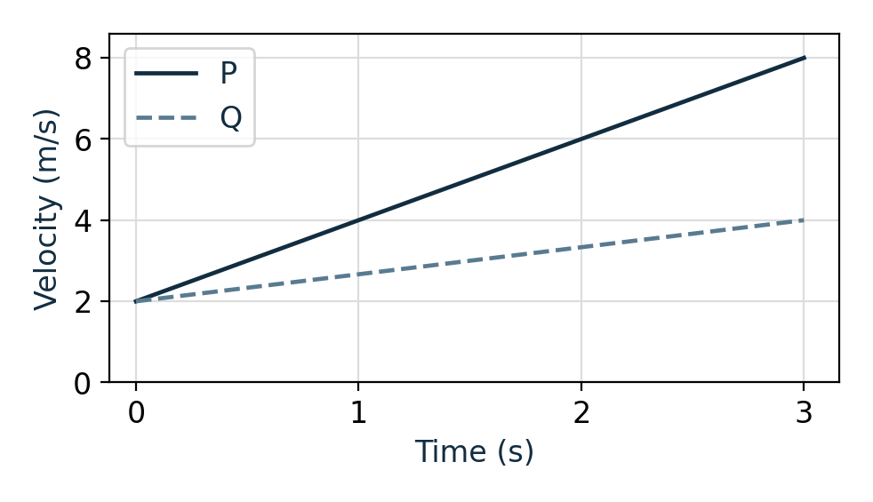
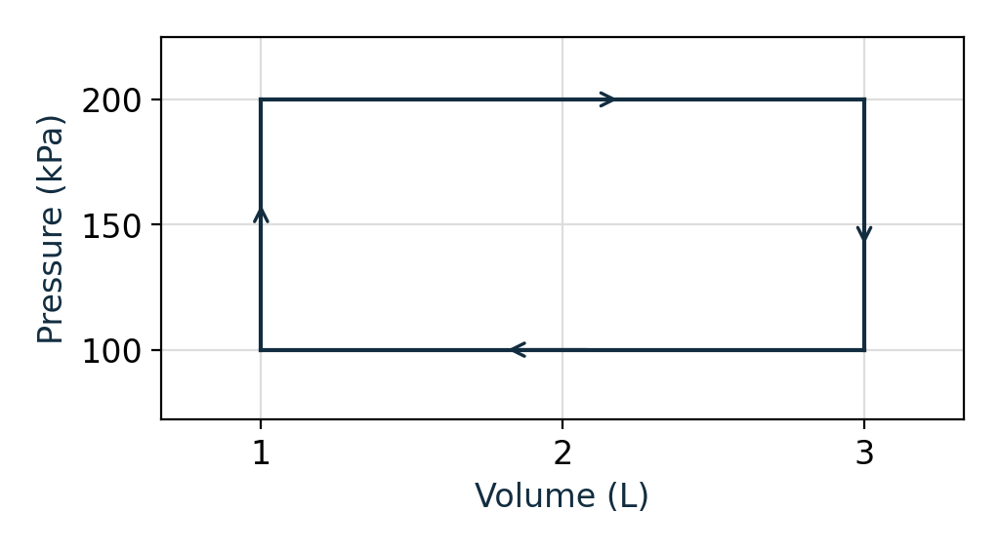
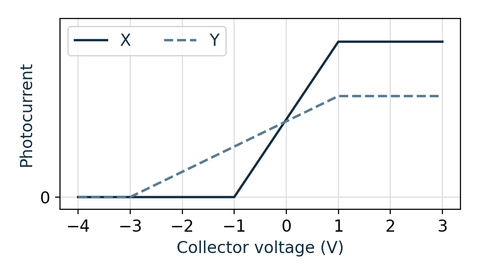
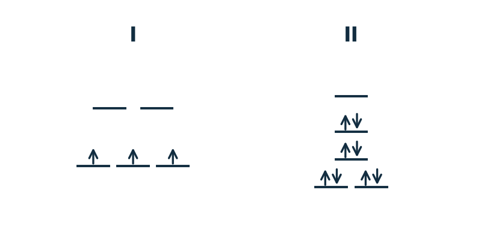
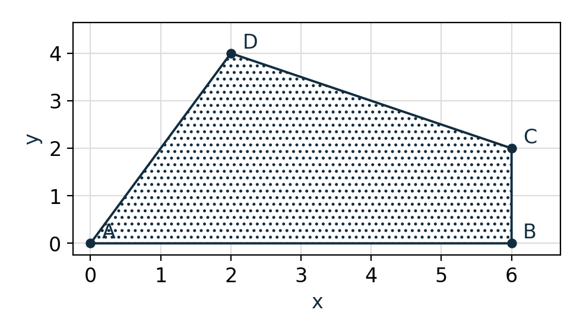
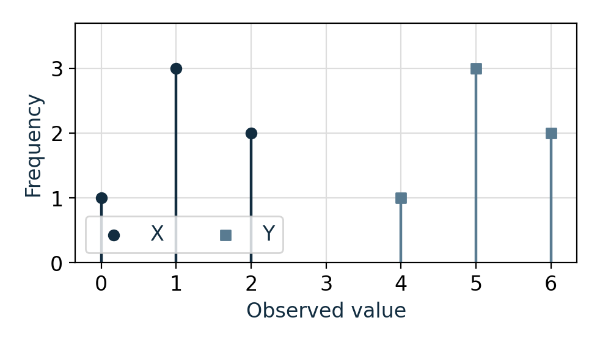
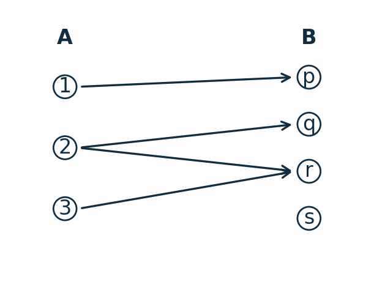

COMEDK UGET Test 25
180 minutes · 180 questions · +1 per correct answer · No negative marking
Physics
Q001. An AC generator with N turns is modified to have 2N turns and half its former rotation rate. Field and area per turn are unchanged. Which pair describes its peak emf and frequency relative to the original?
A) Double peak emf and half the frequency
B) Unchanged peak emf and half the frequency
C) Half peak emf and the same frequency
D) Unchanged peak emf and twice the frequency
Worked solution
Answer: (B) Unchanged peak emf and half the frequency
Why and working: Peak emf is NBAω, so the two changes cancel. Frequency is ω/(2π), so it halves independently of peak emf.
Why not the others: (A) ignores the angular speed in peak emf. (C) ignores the additional turns and the slower repetition. (D) frequency follows rotation rate directly.
Q002. Two straight traces on the velocity–time diagram start at the same velocity and end at the same later time. How much farther does P travel than Q during that interval?

A) 12 m
B) 2 m
C) 6 m
D) 3 m
Worked solution
Answer: (C) 6 m
Why and working: The vertical separation grows linearly from zero to 4 m/s over 3 s. The area between the lines is triangular, giving ½×3×4=6 m.
Why not the others: (A) uses the final separation as constant for the full duration. (B) uses the average velocity difference without multiplying by time. (D) gives the duration rather than an area.
Q003. A converging lens gives a real image at distances u and v from the object and the screen respectively, measured as positive magnitudes. With the object and screen fixed, a second lens position interchanges u and v. If the original signed magnification was −3, what is the new signed magnification?
A) +1/3
B) −1/3
C) −3
D) +3
Worked solution
Answer: (B) −1/3
Why and working: Real inverted image magnification is −v/u. Swapping the two distances inverts its magnitude while preserving the negative sign.
Why not the others: (A) loses the inversion sign. (C) uses the original distance ratio. (D) both swaps the sign and keeps the old magnitude.
Q004. For a long wire with positive line charge density, a coaxial Gaussian cylinder intercepts outward flux Φ. A second cylinder has the same radius but encloses only a quarter as much wire. What happens to total flux and to the field on the curved wall?
A) Flux falls to Φ/4 and the field magnitude stays the same
B) Both fall to one quarter
C) Flux is unchanged and field becomes one quarter
D) Both remain unchanged
Worked solution
Answer: (A) Flux falls to Φ/4 and the field magnitude stays the same
Why and working: Gauss's law makes net flux proportional to the enclosed wire length. The sidewall field is set by the radial distance and line density, both unchanged.
Why not the others: (B) field magnitude depends on radial distance, not the chosen length. (C) interchanges the two effects. (D) enclosed charge falls as the Gaussian cylinder is shortened.
Q005. Two particles start at the origin with velocities (3,0) and (0,4) m/s and continue unchanged. At what time are they 15 m apart?
A) 5 s
B) 3 s
C) 15/7 s
D) 15 s
Worked solution
Answer: (B) 3 s
Why and working: Their separation vector after time t is (3t,−4t) and has magnitude 5t. Setting it equal to 15 gives three seconds.
Why not the others: (A) gives the relative speed as if it were a time. (C) adds perpendicular speed magnitudes. (D) uses a unit relative speed.
Q006. Two identical capacitors C are connected in series across a battery. A third capacitor C is connected across one of the series capacitors, with the battery still attached. What fraction of the battery voltage now appears across the parallel pair?
A) 1/2
B) 2/3
C) 1/4
D) 1/3
Worked solution
Answer: (D) 1/3
Why and working: The parallel pair is 2C, in series with C. Series charge is common, so the voltage across 2C is half that across C, making it one third of the total.
Why not the others: (A) uses the initial equal division before adding the capacitor. (B) gives the fraction on the lone capacitor. (C) incorrectly treats all three as a series chain.
Q007. Two identical cells each have emf E and resistance r. Under which load resistance do the aiding series pair and same-polarity parallel pair deliver the same current?
A) R=2r
B) R=r
C) R=r/2
D) For no positive resistance
Worked solution
Answer: (B) R=r
Why and working: Series current is 2E/(R+2r); parallel current is E/(R+r/2). Equating and cancelling E gives 2R+r=R+2r, so R=r.
Why not the others: (A) sets the load equal to the series internal resistance only. (C) sets the load equal to the parallel internal resistance only. (D) the two expressions match at positive R.
Q008. A block is at rest on a rough tabletop with limiting static friction 12 N and kinetic friction 8 N. A horizontal 9 N pull is applied from rest, then increased to 14 N. What friction magnitudes act before and just after sliding starts?
A) 9 N, then 8 N
B) 12 N, then 8 N
C) 8 N, then 12 N
D) 9 N, then 14 N
Worked solution
Answer: (A) 9 N, then 8 N
Why and working: Static friction adjusts to the 9 N pull because it is below the limit. The larger pull exceeds the limit, and kinetic friction during sliding has magnitude 8 N.
Why not the others: (B) uses maximum static friction even before it is needed. (C) reverses the friction types. (D) after sliding, kinetic friction need not balance the applied force.
Q009. Two long wires attract. One is moved three times farther away and its current magnitude is tripled while its sense reverses. How does the force per unit length change?
A) It stays attractive with unchanged magnitude
B) It becomes repulsive with unchanged magnitude
C) It becomes repulsive and triples
D) It becomes attractive and falls to one third
Worked solution
Answer: (B) It becomes repulsive with unchanged magnitude
Why and working: The magnitude scales as I₁I₂/d, so the factors three cancel. The reversal changes matching current directions into opposite ones, producing repulsion.
Why not the others: (A) ignores the current reversal. (C) ignores the change of separation. (D) both the magnitude and direction comparison are incorrect.
Q010. A nonideal transformer delivers 24 V rms and 3 A rms to a resistive load. Its primary draws 0.40 A rms at 200 V rms with unity power factor. How much average power is lost in the transformer?
A) 72 W
B) 80 W
C) 8 W
D) 152 W
Worked solution
Answer: (C) 8 W
Why and working: Input power is 200×0.40=80 W. Output power is 24×3=72 W, so the loss is 8 W.
Why not the others: (A) gives output power. (B) gives input power. (D) adds input and output.
Q011. A 2 kg cart moves right at 5 m/s toward a 3 kg cart moving left at 2 m/s. After their collision the first cart moves left at 1 m/s. Neglect external impulse. What is the momentum change of the second cart?
A) 6 kg·m/s to the right
B) 12 kg·m/s to the left
C) 12 kg·m/s to the right
D) 2 kg·m/s to the right
Worked solution
Answer: (C) 12 kg·m/s to the right
Why and working: The first cart's signed momentum changes from +10 to −2, a change of −12 kg·m/s. With negligible external impulse, the second gains the opposite change.
Why not the others: (A) uses the second cart's initial momentum magnitude alone. (B) gives the first cart's signed momentum change. (D) gives the first cart's final momentum magnitude only.
Q012. A doublet of two touching lenses has powers +8 D and −5 D. It is made by adding these elements to give a converging system. Which removal, if any, makes the system diverging?
A) Remove the +8 D element
B) Remove the −5 D element
C) Remove either one individually
D) Neither removal can change the sign of total power
Worked solution
Answer: (A) Remove the +8 D element
Why and working: The pair has +3 D. Removing the positive lens leaves −5 D, while removing the negative lens leaves +8 D. Only the first makes the resultant power negative.
Why not the others: (B) leaves a single converging element. (C) only one of the two remaining single elements is diverging. (D) adding powers permits one element to change the sign.
Q013. Two infinite insulating sheets carry equal positive charge density +σ and enclose a gap. A third sheet with density −σ is placed midway between them. What is the electric field direction between the left sheet and the centre sheet?
A) To the left
B) Zero everywhere in that interval
C) Up parallel to the sheets
D) To the right
Worked solution
Answer: (D) To the right
Why and working: The original positive sheets give opposite equal fields throughout their gap. The negative middle sheet adds a field toward itself, which points right on its left side.
Why not the others: (A) would point away from the negative sheet. (B) omits the middle sheet's contribution. (C) the sheet field is normal to its plane.
Q014. Two wheels have different moments of inertia. They rotate through the same angle from rest under equal constant torques about their axles. What necessarily agrees at the end?
A) Angular speed
B) Rotational kinetic energy
C) Angular acceleration
D) Angular momentum
Worked solution
Answer: (B) Rotational kinetic energy
Why and working: The torque does work τθ on each wheel. From rest with no other work, this equals its final kinetic energy, regardless of how speed depends on inertia.
Why not the others: (A) equal energy with different inertia gives different speeds. (C) angular acceleration is τ/I. (D) at the same energy angular momentum depends on inertia.
Q015. An ideal capacitor has two equal plate areas facing across one gap. A dielectric with κ=3 fills half the facing area across the full gap. With a battery still connected, by what factor does the total charge increase?
A) 3
B) 3/2
C) 1/2
D) 2
Worked solution
Answer: (D) 2
Why and working: The two half-area regions are parallel capacitors with the same voltage. Their capacitances are C₀/2 and 3C₀/2, yielding 2C₀. Charge at constant voltage doubles.
Why not the others: (A) assumes the entire area is filled with dielectric. (B) uses only the dielectric half's capacitance. (C) omits the dielectric branch altogether.
Q016. At a junction, 5 A enters from the north and 1 A leaves toward the west. An ideal meter shows 6 A flowing south. What current must the east branch carry?
A) 2 A away from the junction
B) 10 A toward the junction
C) 12 A away from the junction
D) 2 A toward the junction
Worked solution
Answer: (D) 2 A toward the junction
Why and working: Outgoing currents total 1+6=7 A. The north supplies 5 A, so the east branch supplies the remaining 2 A into the junction.
Why not the others: (A) would create extra outgoing current. (B) adds flows with opposite signs incorrectly. (C) adds all magnitudes rather than conserving current.
Q017. Two satellites orbit Earth in circles at radii R and 4R. On each orbit a short segment takes the same time to traverse. What is the ratio of those short segment lengths, inner:outer?
A) 2:1
B) 4:1
C) 1:2
D) 1:4
Worked solution
Answer: (A) 2:1
Why and working: Orbital speed scales as r^(−1/2), so the inner satellite is twice as fast. At equal time the arc lengths share that ratio.
Why not the others: (B) uses inverse radius without the square root. (C) reverses the ordering. (D) reverses and omits the square root.
Q018. A current loop is reshaped from a rectangle of sides L and 2L into a square of the same wire length. Its current and angle to the field are unchanged and torque is initially nonzero. What is its new torque magnitude divided by the old?
A) 8/9
B) 9/8
C) 3/2
D) 1
Worked solution
Answer: (B) 9/8
Why and working: The original perimeter is 6L, so square side is 1.5L. Areas are 2L² and 2.25L². With identical current and orientation, torque scales with area, giving 9/8.
Why not the others: (A) gives old area divided by new area. (C) compares a length rather than area. (D) equal perimeter does not imply equal area.
Q019. A prism in its symmetric minimum-deviation setting takes external incidence 45° and has internal refraction angle 25° at entry. What is the net deviation?
A) 40°
B) 20°
C) 50°
D) 90°
Worked solution
Answer: (A) 40°
Why and working: At minimum deviation the emergence angle also equals 45° and both internal angles equal 25°. Each face turns the ray by 20°, giving 40° in total.
Why not the others: (B) counts only one face's turning. (C) gives the apex angle from two internal angles. (D) does not subtract the apex angle from the two outer angles.
Q020. Two liquid films are held in identical rectangular frames with the same moving-edge length. Film X has two exposed faces at surface tension γ; film Y has only one moving interface and tension 1.5γ. Which offers the larger resisting force and by what factor?
A) X, by a factor 4/3
B) Y, by a factor 3/2
C) They agree
D) X, by a factor 2
Worked solution
Answer: (A) X, by a factor 4/3
Why and working: At fixed moving length L, the film force is the derivative of surface work with displacement. It is 2γL for X and 1.5γL for Y, giving 2/1.5=4/3.
Why not the others: (B) compares tensions without interface counts. (C) the single-interface tension is not 2γ. (D) ignores the higher tension of Y.
Q021. A uniformly charged thin shell has total charge +Q. A point charge −Q/2 is placed at its centre. Compare fluxes through two concentric spheres just inside and just outside the shell.
A) Inner flux zero, outer flux Q/ε₀
B) Both fluxes equal +Q/(2ε₀)
C) Both fluxes equal −Q/(2ε₀)
D) Inner flux −Q/(2ε₀), outer flux +Q/(2ε₀)
Worked solution
Answer: (D) Inner flux −Q/(2ε₀), outer flux +Q/(2ε₀)
Why and working: The inner Gaussian sphere encloses just the centre charge. The outer one encloses that charge plus the shell's +Q. Divide each sum by ε₀.
Why not the others: (A) omits the central charge. (B) gives the exterior enclosure for both. (C) omits the shell from the outer enclosure.
Q022. Two capacitors have different charge and voltage readings, but the same stored energy. If the second holds half the free charge magnitude of the first, how does its voltage magnitude compare?
A) Half as large
B) Four times as large
C) The same
D) Twice as large
Worked solution
Answer: (D) Twice as large
Why and working: Use stored energy U=QV/2 with positive magnitudes. Equal U and half Q require twice V.
Why not the others: (A) would reduce energy to one quarter. (B) confuses capacitance scaling with voltage scaling. (C) would leave only half the energy.
Q023. A heater is placed in a freely circulating room with negligible forced air movement. A person across the room feels warmth immediately even though air has not yet moved there from the heater. Which transfer mechanism is consistent with that early effect?
A) Convection from arriving warm air
B) Conduction by a metal link that is absent
C) Only latent heat from water condensing on the heater
D) Thermal radiation
Worked solution
Answer: (D) Thermal radiation
Why and working: Thermal radiation carries energy by electromagnetic waves and can reach the person before bulk motion of warm air transfers heat.
Why not the others: (A) would involve the air motion excluded by the timing. (B) no direct conductive path is specified. (C) the observation does not require any phase change.
Q024. A Wheatstone bridge has 2 Ω and 6 Ω as its upper and lower left arms, and 4 Ω and R as its upper and lower right arms. After balancing, the supply magnitude doubles and the detector still reads zero. What was R?
A) 3 Ω
B) 6 Ω
C) 12 Ω
D) 24 Ω
Worked solution
Answer: (C) 12 Ω
Why and working: The two midpoint fractions agree when 2/6=4/R, so R=12 Ω. A supply change multiplies both midpoint voltages by the same factor.
Why not the others: (A) inverts a ratio of the left arms. (B) requires equal lower arms despite different upper arms. (D) counts the supply change as a resistance change.
Q025. A galvanometer needs 1 mA for full-scale deflection. A given series resistance converts it to a 10 V meter. What additional series resistance, beyond that already fitted, makes it a 20 V meter?
A) 10 kΩ
B) 20 kΩ
C) 5 kΩ
D) 10 Ω
Worked solution
Answer: (A) 10 kΩ
Why and working: For fixed full-scale current the new extra 10 V must drop across the added resistor. Thus R_add=10/0.001=10000 Ω.
Why not the others: (B) uses the entire final voltage instead of its increase. (C) accounts for only a 5 V increase. (D) fails to convert mA to A.
Q026. The arrows show a gas cycle on a pressure–volume graph. What is the net heat into the gas over one complete cycle?

A) −200 J
B) +200 J
C) +400 J
D) Zero
Worked solution
Answer: (B) +200 J
Why and working: The clockwise rectangle gives positive work from its area. The pressure span is 100 kPa and the volume span is 2 L, so W_net=200 J since 1 kPa·L=1 J. The closed cycle has ΔU=0, so Q_net is +200 J.
Why not the others: (A) takes the opposite traversal sense. (C) uses the larger absolute pressure rather than the pressure span. (D) zero internal-energy change does not force zero net heat.
Q027. The objective of a microscope forms the same intermediate image during two observations. Changing the eyepiece doubles its angular factor. How does the product magnification of the microscope change?
A) It doubles
B) It halves
C) It stays unchanged
D) It increases fourfold
Worked solution
Answer: (A) It doubles
Why and working: The magnification magnitude is the objective's linear factor times the eyepiece's angular factor. The former stays fixed, so the latter's doubling doubles the product.
Why not the others: (B) uses the reciprocal of the eyepiece's stated change. (C) the eyepiece contributes directly. (D) assumes both optical factors double.
Q028. A reflecting telescope replaces the objective lens of an otherwise comparable refracting design with a suitably figured mirror. Which objective property explains the reduced chromatic aberration?
A) The mirror separates visible colours more strongly than a prism
B) Reflection does not use wavelength-dependent refraction by the objective glass
C) The redesigned telescope transmits only one colour by necessity
D) The mirror always has infinite focal length
Worked solution
Answer: (B) Reflection does not use wavelength-dependent refraction by the objective glass
Why and working: The objective mirror's geometrical focusing relies on reflection. It avoids wavelength-dependent refractive power of a single lens objective.
Why not the others: (A) reflection does not normally create the lens's dispersion error. (C) reflecting telescopes can collect broadband light. (D) a curved mirror has finite focal length.
Q029. A tuning fork of unknown frequency beats 4 Hz with a 256 Hz fork. With a 258 Hz fork it beats 2 Hz. What is the unknown frequency?
A) 252 Hz
B) 260 Hz
C) 254 Hz
D) 258 Hz
Worked solution
Answer: (B) 260 Hz
Why and working: The first reading gives two candidates, 252 and 260. Their differences from 258 are 6 and 2 Hz respectively, so only 260 matches both readings.
Why not the others: (A) would give six beats per second with the second fork. (C) is only two Hz from the first fork. (D) would give zero beats with the second.
Q030. Two identical insulated metal spheres carry −5 nC and +1 nC. They touch and separate, then one is connected to Earth far from other charges. What total charge remains on the two spheres after the ground wire is removed?
A) −2 nC
B) −4 nC
C) 0 nC
D) +2 nC
Worked solution
Answer: (A) −2 nC
Why and working: At contact the conserved total −4 nC shares equally. Grounding one neutralises that sphere in the stated surroundings, leaving the untouched sphere at −2 nC.
Why not the others: (B) would conserve charge of the pair despite contact with Earth. (C) the untouched sphere remains charged. (D) the shared charge was negative.
Q031. Three marked distances from a positive point charge are r, 2r and 4r. How does the magnitude of the potential drop r→2r compare with 2r→4r?
A) The drops are equal
B) It is four times as large
C) It is half as large
D) It is twice as large
Worked solution
Answer: (D) It is twice as large
Why and working: Since V=kq/r, the successive drops are kq/(2r) and kq/(4r). Dividing gives two.
Why not the others: (A) successive equal radius scale factors do not mean equal drops. (B) uses inverse-square scaling of field instead of potential. (C) reverses the ratio.
Q032. A projectile launched from level ground has initial components 15 m/s horizontally and 20 m/s upward. With g=10 m/s² and no drag, what is its horizontal location when the vertical velocity is first −10 m/s?
A) 15 m
B) 30 m
C) 45 m
D) 60 m
Worked solution
Answer: (C) 45 m
Why and working: Use v_y=20−10t. Setting v_y=−10 gives t=3 s. The horizontal component stays 15 m/s, so x=45 m.
Why not the others: (A) gives the location at v_y=+10 m/s. (B) gives the location at the highest point. (D) gives the landing position.
Q033. A steady current enters a two-part wire with equal carrier density. The downstream cross-sectional area is one third of the upstream area. How does net electron count per second crossing a section compare with drift speed?
A) The count rate triples and drift speed is unchanged
B) The count rate is unchanged and drift speed triples
C) Both triple
D) Both remain unchanged
Worked solution
Answer: (B) The count rate is unchanged and drift speed triples
Why and working: The count rate is I/e, equal in the two series parts in steady state. Since I=neAv, reducing area to a third increases drift speed threefold.
Why not the others: (A) current continuity precludes a changed count rate. (C) only drift adjusts for the area change. (D) equal I does not require equal v at different area.
Q034. A compass beside a current-carrying wire deflects from its original heading. When the wire is rotated so its field at the compass points in the same direction as Earth's local horizontal field, what changes despite nonzero current?
A) The wire ceases generating any magnetic field
B) The needle must always be perpendicular to Earth's field
C) The compass can retain its original heading because its net horizontal field remains collinear
D) The compass becomes a permanent electric charge detector
Worked solution
Answer: (C) The compass can retain its original heading because its net horizontal field remains collinear
Why and working: The needle aligns with the vector sum. An added parallel field in the same direction changes its magnitude without turning it.
Why not the others: (A) current still produces a magnetic field. (B) collinear same-sense fields keep their original heading. (D) the effect is magnetic, not charge detection.
Q035. A heavy trolley changes from sliding skids to free-turning wheels on the same horizontal track. Why can the force required at constant speed be lower?
A) Rolling removes gravity and the normal force entirely
B) Wheel rotation requires no energy loss in all real materials
C) Rolling can dissipate less energy per unit distance than sustained sliding
D) Replacing skids makes the trolley's mass vanish while moving
Worked solution
Answer: (C) Rolling can dissipate less energy per unit distance than sustained sliding
Why and working: Wheels avoid continuous sliding at the main contacts. A level trolley at constant speed still loses energy through rolling resistance, but it can be much smaller.
Why not the others: (A) weight and normal reaction persist. (B) real tyres and bearings can dissipate energy. (D) moving mass does not disappear.
Q036. A bar magnet of dipole moment m is modelled by a compact current coil with N turns and area A. Which change would match a magnet with moment 3m in the same direction if the current is halved and N stays fixed?
A) Increase the area to 6A
B) Increase the area to 3A
C) Reduce the area to A/6
D) Reverse the current and leave the area fixed
Worked solution
Answer: (A) Increase the area to 6A
Why and working: Coil moment NIA must triple despite the factor 1/2 in I. Thus the area factor must satisfy A_new/(2A)=3, giving 6A.
Why not the others: (B) ignores the reduced current. (C) takes the reciprocal scaling. (D) reverses the moment and does not obtain its magnitude.
Q037. A single flat loop rotates from its normal at 60° to a fixed magnetic field to its normal at 120°. What change in flux occurs for field B and area A?
A) Zero
B) +BA
C) −BA/2
D) −BA
Worked solution
Answer: (D) −BA
Why and working: The normal component changes from B cos 60°=B/2 to B cos 120°=−B/2. Therefore Φ_final−Φ_initial=−BA.
Why not the others: (A) cosines have opposite signs. (B) reverses the endpoint subtraction. (C) uses one endpoint magnitude rather than their difference.
Q038. During a collision on a smooth horizontal table the total initial northward momentum is zero. After the impact a 3 kg cart moves at 4 m/s, 30° north of east. What north–south momentum component must the other cart carry?
A) 6 kg·m/s south
B) 6 kg·m/s north
C) 6√3 kg·m/s south
D) 12 kg·m/s south
Worked solution
Answer: (A) 6 kg·m/s south
Why and working: The first cart has north component 3×4×sin 30°=6 kg·m/s. Conservation of the zero total northward component makes the other's contribution −6 kg·m/s.
Why not the others: (B) would add rather than cancel the first cart's northward momentum. (C) uses the first cart's eastward momentum magnitude. (D) uses the full first-cart momentum instead of its component.
Q039. An ideal resistor receives a sinusoidal current with peak 4 A during one half of each long repeated interval and zero during the other half, with many complete cycles during the active portion. What effective rms current applies across the entire interval?
A) 2 A
B) 2√2 A
C) 4 A
D) 1 A
Worked solution
Answer: (A) 2 A
Why and working: During the active portion the mean square is 4²/2=8 A². The zero portion halves the overall mean square to 4 A². Its square root is 2 A.
Why not the others: (B) calculates the rms during the active portion only. (C) reports peak without averaging. (D) incorrectly halves the active rms instead of its square.
Q040. An ideal parallel-plate capacitor charges at constant current I. The area of a selected surface crossing the gap equals the full plate area, but its normal is taken opposite the changing electric field. What is the signed displacement current through that oriented surface?
A) +I
B) Zero
C) −I
D) −I/2
Worked solution
Answer: (C) −I
Why and working: The electric flux includes a sign from the surface normal. Reversing the normal reverses ε₀ times the flux derivative, while the full area preserves the magnitude I.
Why not the others: (A) would match the opposite orientation. (B) a nonzero changing flux exists in the gap. (D) the selected surface covers the full area.
Q041. A body of mass M has radius of gyration k about an axis. A small mass M is fixed at distance k from that axis. What is the combined radius of gyration about the same axis?
A) √2 k
B) k/√2
C) k
D) 2k
Worked solution
Answer: (C) k
Why and working: The moment becomes Mk²+Mk²=2Mk². Divide by total mass 2M to recover k², and take its square root.
Why not the others: (A) uses the original mass with the increased moment. (B) uses the new mass with only the old moment. (D) assumes the added mass doubles the radius linearly.
Q042. A concave mirror has focal length magnitude 12 cm. An upright real object moves from the centre of curvature to between that centre and the focus. Which change in its real image follows?
A) It moves farther from the mirror and grows larger
B) It moves closer to the mirror and grows smaller
C) It becomes upright as soon as the object leaves the centre
D) It always remains the same size as the object
Worked solution
Answer: (A) It moves farther from the mirror and grows larger
Why and working: For u in magnitude between f and 2f, v=fu/(u−f) exceeds 2f. The ratio v/u also exceeds one, producing an enlarged inverted image.
Why not the others: (B) describes moving the object farther from the mirror. (C) upright images are obtained inside the focal distance. (D) equal sizes occur specifically at the centre.
Q043. In a uniform medium, what separates two successive plane wavefronts emitted one full period apart?
A) Half a wavelength along each front
B) One period measured as a spatial length
C) The full transverse width of the wavefront
D) One wavelength measured along the propagation direction
Worked solution
Answer: (D) One wavelength measured along the propagation direction
Why and working: In one period T the disturbance propagates distance vT=λ normal to the fronts. Along a front all points share phase.
Why not the others: (A) the phase changes along propagation, not along one front. (B) one period is a time, requiring multiplication by speed. (C) width is unrelated to spacing of phase surfaces.
Q044. A glass capillary shows a rise h for a wetting liquid. The tube is changed to one with twice the radius while the contact-angle cosine changes from 1 to 1/2; density and tension are unchanged. What is the new rise?
A) h/2
B) h
C) h/4
D) 2h
Worked solution
Answer: (C) h/4
Why and working: Capillary rise is proportional to cos θ/r. Halving the numerator and doubling the denominator multiply the old value by one quarter.
Why not the others: (A) accounts for only one factor. (B) would require the changes to cancel. (D) uses a direct radius factor.
Q045. For the two incident beams in the plotted photocurrent curves on the same metal, which trace indicates the larger maximum photoelectron kinetic energy?

A) X, because its saturation current is higher
B) Both, because their saturation currents both exceed zero
C) X, because its current reaches zero closer to 0 V
D) Y, because it needs a more negative collector voltage to stop the current
Worked solution
Answer: (D) Y, because it needs a more negative collector voltage to stop the current
Why and working: Read the zero-current biases: X cuts off at −1 V and Y at −3 V. K_max=e times the stopping potential magnitude, so Y has the larger maximum energy.
Why not the others: (A) saturation current counts collected charges per time rather than their maximum energy. (B) nonzero plateaux do not imply equal energy. (C) a smaller stopping magnitude means smaller maximum energy.
Q046. In an alpha-scattering model, a beam passes through an unusually thin metal foil. A small fraction of tracks turn back strongly. Why does this favour a compact positive nucleus?
A) A diffuse positive cloud gives equal strong deflection to each passing particle
B) All large deflections require the alpha particle to collide mechanically with an electron
C) The observation supports no positive charge in the atom
D) A close approach can experience a sufficiently strong local Coulomb repulsion to reverse the track
Worked solution
Answer: (D) A close approach can experience a sufficiently strong local Coulomb repulsion to reverse the track
Why and working: A compact concentration of positive charge gives a high repulsive field near the centre while most paths miss that region. Rare strong deflections are therefore compatible with mostly straight tracks.
Why not the others: (A) uniformly strong influence would not explain the rarity and diffuse charge gives weak scattering. (B) light electrons cannot readily cause this backward scattering of massive alpha particles. (C) repulsion indicates positively charged scattering centres.
Q047. Two blackbodies have temperatures T and 2T. Their emitted powers are equal. How does the surface area of the hotter body compare with that of the cooler body?
A) It is one fourth as large
B) It is one half as large
C) It is one sixteenth as large
D) It is sixteen times as large
Worked solution
Answer: (C) It is one sixteenth as large
Why and working: Total emitted power is σAT⁴. Equal power requires the area to scale as T⁻⁴, so the hotter area is (1/2)⁴ of the cooler area.
Why not the others: (A) uses square instead of fourth-power scaling. (B) uses inverse temperature only. (D) uses the correct power in the wrong direction.
Q048. Two nuclei have mass numbers 27 and 64. In the radius model R=r₀A^(1/3), what is the ratio of their approximate volumes, smaller:larger?
A) 3:4
B) 27:64
C) 9:16
D) 64:27
Worked solution
Answer: (B) 27:64
Why and working: Volume is proportional to the cube of radius. Since R itself scales as the cube root of A, the volumes scale directly as A.
Why not the others: (A) gives the ratio of radii. (C) gives the ratio of surface areas. (D) reverses the order.
Q049. One material has a partly filled band at zero temperature, and another has a filled valence band separated by a wide gap from the next band. Which is the easier conductor without thermal excitation?
A) The partly filled band, since nearby empty states can be reached without crossing a wide gap
B) The full band, because it contains more electrons regardless of empty states
C) They necessarily conduct equally
D) The wide-gap material, because the larger gap speeds carrier motion
Worked solution
Answer: (A) The partly filled band, since nearby empty states can be reached without crossing a wide gap
Why and working: A weak electric field can change occupations only when nearby states are available. A full band with a wide gap offers no analogous low-energy redistribution.
Why not the others: (B) occupied states alone do not provide available destination states. (C) band filling and gap alter the response. (D) a large gap suppresses excitation.
Q050. A circular turntable rotates uniformly. A point at radius r completes one revolution in 6 s. For a point at radius 2r, what distance does it travel in 3 s?
A) πr
B) 4πr
C) 2πr
D) πr/2
Worked solution
Answer: (C) 2πr
Why and working: Both points share angular speed, so 3 s is half a revolution. At radius 2r its arc is (2r)π=2πr.
Why not the others: (A) uses the inner radius. (B) uses a full revolution on the outer circle. (D) uses too small a radius or angle.
Q051. At the origin, a positive charge q at (a,0) and another at (0,a) each produce field magnitude E₀. In which direction does their resultant point?
A) Toward (1,1)
B) Toward (−1,1)
C) Toward (−1,−1)
D) Toward (0,−1)
Worked solution
Answer: (C) Toward (−1,−1)
Why and working: Each positive source makes field away from its position at the origin. The contributions are −E₀ along x and −E₀ along y, so the net has two equal negative components.
Why not the others: (A) points toward the two positive sources. (B) gives the wrong sign for the y contribution. (D) drops the x contribution.
Q052. Two fixed charges +q and −q lie at equal distances from P. For an infinitesimal shift from P along the perpendicular bisector between the two charges, what happens to their net potential?
A) It becomes positive everywhere other than P
B) It stays zero along the perpendicular bisector
C) It becomes negative everywhere other than P
D) It becomes nonzero unless the electric field is zero at P
Worked solution
Answer: (B) It stays zero along the perpendicular bisector
Why and working: Each point on that bisector remains equidistant from the opposite charges. Their signed scalar potentials cancel at every such point, even when the field vector does not vanish.
Why not the others: (A) an off-centre point on the bisector is still equidistant. (C) the two distances still match after the stated displacement. (D) constant potential along one direction need not mean zero field in all directions.
Q053. On a frictionless banked curve of radius R and design speed v, a vehicle moves faster than v. Relative to the road surface, which way does it tend to slip?
A) Down the bank toward the inside
B) Straight toward the centre perpendicular to its path
C) Up the bank toward the outside
D) It cannot slip at any speed because the road is banked
Worked solution
Answer: (C) Up the bank toward the outside
Why and working: The bank's force geometry provides exactly the inward acceleration at v. For a higher speed, more inward acceleration would be needed at the same radius; without friction the car drifts outward up the bank.
Why not the others: (A) describes the tendency when speed is too low. (B) the acceleration demand is inward but the relative slip is outward. (D) fixed bank angle does not accommodate every speed without friction.
Q054. Two conducting specimens show equal current density at equal field. Specimen X has triple the mobile carrier density of Y, with equal charge magnitude. How does X's mobility compare?
A) It is triple Y's
B) It is one third of Y's
C) It is the same as Y's
D) It is one ninth of Y's
Worked solution
Answer: (B) It is one third of Y's
Why and working: Since J=neμE, equal J and E require equal nμ. Tripling n therefore divides μ by three.
Why not the others: (A) would multiply nμ by nine. (C) leaves a larger product nμ in X. (D) uses a squared density factor.
Q055. At the centre of a circular loop a given current produces field B. A second loop of threefold radius carries current 6I in the same sense, with its centre coincident and plane parallel. What field does the second loop add?
A) 2B in the same direction
B) 18B in the same direction
C) B/2 in the opposite direction
D) 6B in the same direction
Worked solution
Answer: (A) 2B in the same direction
Why and working: For one turn, B=μ₀I/(2R). Increasing current by six and radius by three gives factor 2, while the circulation sense fixes the same field direction.
Why not the others: (B) uses direct radius scaling. (C) reverses the direction and magnitude comparison. (D) ignores the radius effect.
Q056. A uniform disc and thin ring have the same mass and outer radius. Both spin about their symmetry axes at the same angular momentum magnitude. Which has greater rotational kinetic energy?
A) The ring, with twice the disc's energy
B) The energies are equal
C) The disc, with four times the ring's energy
D) The disc, with twice the ring's energy
Worked solution
Answer: (D) The disc, with twice the ring's energy
Why and working: The disc has I=MR²/2 and the ring has I=MR². At fixed L, kinetic energy is L²/(2I), inversely proportional to moment of inertia.
Why not the others: (A) applies the relation at fixed angular speed rather than fixed L. (B) equal L can accompany different speeds. (C) uses inverse-square instead of inverse-inertia scaling.
Q057. A short magnetic dipole is physically translated without rotating it. A fixed compass changes from being on its axial line to being on its equatorial line at the same distance from the dipole. Ignoring Earth's field, how do the field direction and magnitude compare at the compass?
A) The direction stays fixed and the magnitude halves
B) The direction reverses and the magnitude doubles
C) The direction and magnitude stay fixed
D) The direction reverses and the magnitude halves
Worked solution
Answer: (D) The direction reverses and the magnitude halves
Why and working: The axial field is parallel to the unchanged dipole moment and has twice the magnitude of the equatorial field. The equatorial field is antiparallel, hence the reversal and halving.
Why not the others: (A) keeps the wrong direction for the equatorial field. (B) inverts the magnitude ratio. (C) the location angle changes both the directional factor and its magnitude.
Q058. A coil of 50 turns has each turn's flux fall from 0.020 to 0.008 Wb over 0.10 s. If its switch is closed across total resistance 3 Ω and self-inductance is negligible, what average induced current magnitude flows?
A) 6 A
B) 2 A
C) 0.040 A
D) 1.2 A
Worked solution
Answer: (B) 2 A
Why and working: The per-turn flux change magnitude is 0.012 Wb. The mean emf is 50×0.012/0.10=6 V. Dividing by 3 Ω yields 2 A.
Why not the others: (A) gives the emf number before dividing by resistance. (C) forgets the turn factor. (D) uses the final flux or otherwise miscalculates the flux change.
Q059. Two soap bubbles of the same surface tension have radii r and 2r. The surrounding gas pressure is the same. If joined by a narrow ideal tube that allows gas to move between them, which way is the initial flow?
A) From the larger bubble to the smaller
B) No flow because the exterior pressure is equal
C) From the smaller bubble to the larger
D) No flow because both have the same surface tension
Worked solution
Answer: (C) From the smaller bubble to the larger
Why and working: For a thin soap film, inside excess pressure is 4γ/r. The smaller radius gives larger internal pressure, driving gas toward the larger bubble.
Why not the others: (A) reverses the pressure ordering. (B) equal external pressure does not equalise excess pressure. (D) curvature produces different inner pressures at equal γ.
Q060. A series AC circuit has known resistor 6 Ω. At one frequency its impedance magnitude is 10 Ω and it is net capacitive. What is its signed net reactance?
A) +8 Ω
B) −4 Ω
C) −16 Ω
D) −8 Ω
Worked solution
Answer: (D) −8 Ω
Why and working: The magnitude √(Z²−R²)=√(100−36)=8 Ω. Net capacitive means X_L−X_C is negative.
Why not the others: (A) gives the inductive sign. (B) subtracts magnitudes instead of squares. (C) subtracts the resistor with the wrong algebra.
Chemistry
Q061. A solution has 0.25 mol of solute in 200 mL of final solution. Adding solvent takes the total volume to 500 mL without loss of solute. What is the drop in molarity?
A) 0.75 M
B) 0.50 M
C) 1.25 M
D) 0.30 M
Worked solution
Answer: (A) 0.75 M
Why and working: Initially c=0.25/0.200=1.25 M and finally c=0.25/0.500=0.50 M. Their initial-minus-final difference is 0.75 M.
Why not the others: (B) gives the final molarity. (C) gives the initial molarity. (D) uses the volume increase in litres.
Q062. The standard formation enthalpies of gaseous CO₂ and CO are −394 and −111 kJ/mol, respectively. What is the standard enthalpy for CO(g)+½O₂(g)→CO₂(g)?
A) +283 kJ/mol
B) −505 kJ/mol
C) −394 kJ/mol
D) −283 kJ/mol
Worked solution
Answer: (D) −283 kJ/mol
Why and working: Formation enthalpies give products minus reactants, so the result is −394−[−111+0]=−283 kJ/mol. Elemental oxygen in its standard state contributes zero.
Why not the others: (A) reverses reaction direction. (B) adds the two formation enthalpies. (C) omits the reactant CO term.
Q063. Under standard conditions a cell's spontaneous reaction oxidises A(s) and reduces B²⁺. Its measured E° is +0.30 V. If E° for B²⁺/B is +0.10 V, what is the standard reduction potential for A²⁺/A?
A) +0.20 V
B) +0.40 V
C) −0.20 V
D) −0.40 V
Worked solution
Answer: (C) −0.20 V
Why and working: B is the cathode. In E°_cell=E°_B−E°_A, insert 0.30=0.10−E°_A to obtain −0.20 V.
Why not the others: (A) reverses the sign in rearranging. (B) adds both listed voltages. (D) uses the wrong subtraction.
Q064. A reactant's concentration falls by 0.24 M over an observation interval at an average disappearance rate of 0.030 M/s. At the midpoint of the interval its tangent slope is −0.040 M/s. Which time span is implied?
A) 6 s
B) 8 s
C) 12 s
D) 10 s
Worked solution
Answer: (B) 8 s
Why and working: The secant magnitude is total concentration fall divided by elapsed time. Therefore Δt=0.24/0.030=8 s. The instantaneous tangent value does not govern the full interval.
Why not the others: (A) uses the midpoint tangent rate in the division. (C) uses a rate of 0.020 M/s. (D) does not give the observed concentration decrease at the stated average.
Q065. A buffer contains weak acid HA and salt A⁻ in the molar ratio 1:4. What is pH−pKₐ if log₁₀2≈0.301?
A) −0.602
B) +0.301
C) +0.602
D) Zero
Worked solution
Answer: (C) +0.602
Why and working: The buffer approximation gives pH−pKₐ=log₁₀([A⁻]/[HA])=log₁₀4=2 log₁₀2≈0.602.
Why not the others: (A) inverts the concentration ratio. (B) uses a twofold rather than fourfold ratio. (D) would require equal buffer-component concentrations.
Q066. A neutral first-row metal atom has ground configuration [Ar]3d¹⁰4s¹. Its common divalent ion has a partly filled d subshell. Which atom is it?
A) Copper
B) Zinc
C) Scandium
D) Iron
Worked solution
Answer: (A) Copper
Why and working: The given configuration has 29 electrons and corresponds to copper. Cu²⁺ is 3d⁹ after removing one 4s and one 3d electron.
Why not the others: (B) neutral Zn has 4s² and Zn²⁺ remains d¹⁰. (C) Sc has substantially fewer 3d electrons. (D) Fe has a partly filled neutral 3d⁶ subshell.
Q067. A metal has coordination number six. Its complex contains only bidentate oxalate and monodentate water; exactly four individual ligand molecules are attached. How many oxalate ligands are present?
A) One
B) Two
C) Three
D) Four
Worked solution
Answer: (B) Two
Why and working: Let b count oxalate and 4−b count water. The donor count is 2b+(4−b)=6, so b=2.
Why not the others: (A) would give five donors. (C) would give seven donors. (D) would give eight donors.
Q068. A neutral bond A–B has a partial positive charge at A and partial negative at B. It undergoes idealised homolytic cleavage. Which prediction avoids confusing its starting polarity with the bookkeeping of cleavage?
A) B takes both electrons because it was partially negative
B) A gains both bonding electrons because it was partially positive
C) Each fragment takes one bonding electron, so two radicals result
D) Both fragments keep the entire bonding pair
Worked solution
Answer: (C) Each fragment takes one bonding electron, so two radicals result
Why and working: Homolysis splits the shared pair evenly. Starting bond polarisation does not alter the defining one-electron allocation of formal homolytic cleavage.
Why not the others: (A) would be heterolytic cleavage toward B. (B) would instead be heterolysis toward A. (D) a two-electron pair cannot be given intact to both fragments.
Q069. Two structural isomers of C₄H₉Br are 1-bromobutane and 1-bromo-2-methylpropane. Which structural distinction does that name change identify?
A) The second is a straight chain with Br on its second carbon
B) The first contains a C=C bond and the second does not
C) The second has Br bonded directly to an aromatic carbon
D) The second has a branched carbon skeleton while Br is terminal in both
Worked solution
Answer: (D) The second has a branched carbon skeleton while Br is terminal in both
Why and working: In 1-bromo-2-methylpropane the longest parent includes three carbons with a 2-methyl branch. Both names place Br at carbon one of their own saturated chains.
Why not the others: (A) the methyl locant does not move Br from carbon one. (B) both names describe saturated haloalkanes. (C) neither parent contains an aromatic ring.
Q070. An alkene is subjected to ordinary acid-catalysed hydration. Which product preserves the three-carbon skeleton of propene while placing OH where the major carbocation route predicts?
A) Propan-1-ol
B) Propanone
C) Propan-2-ol
D) Propan-1,2-diol
Worked solution
Answer: (C) Propan-2-ol
Why and working: Protonation preferentially gives a secondary carbocation at the middle carbon. Attack by water and loss of a proton place OH there.
Why not the others: (A) would correspond to addition with the opposite regiochemistry. (B) contains a ketone rather than OH. (D) ordinary hydration introduces one OH group.
Q071. When ethene reacts with Br₂, which description explains why only one C–C bond remains in the addition product?
A) The C–C sigma bond alone breaks and the pi bond holds the ethyl fragments together
B) The C–C sigma bond persists and the pi bond is consumed as two C–Br bonds form
C) No original bond changes because bromination only replaces two H atoms
D) Both carbon atoms lose all bonding to each other
Worked solution
Answer: (B) The C–C sigma bond persists and the pi bond is consumed as two C–Br bonds form
Why and working: The electron-rich π bond initiates reaction with polarised bromine. The saturated dibromo product retains the C–C sigma framework but no carbon–carbon π bond.
Why not the others: (A) the original sigma framework stays connected. (C) addition uses the double bond without displacing two hydrogens. (D) the two carbons are still joined.
Q072. Which condensed formula fits the name 3-methylpentanal?
A) CH₃CH(CH₃)CH₂CH₂CHO
B) CH₃CH₂CH₂COCH₃
C) CH₃CH₂CH(CH₃)CH₂COOH
D) CH₃CH₂CH(CH₃)CH₂CHO
Worked solution
Answer: (D) CH₃CH₂CH(CH₃)CH₂CHO
Why and working: The aldehyde carbon must be terminal carbon 1. Count a five-carbon chain including that carbon; carbon 3 must bear the methyl branch.
Why not the others: (A) has its branch at C4 when numbered from CHO. (B) is a ketone without the required methyl branch. (C) ends in a carboxylic acid.
Q073. Which pair is consistent with a molecule CH₃CH₂NHCH₂CH₃?
A) Ethylamine, a primary amine
B) N-Ethylethanamide, an amine
C) Diethylamine, a secondary amine
D) Triethylamine, a tertiary amine
Worked solution
Answer: (C) Diethylamine, a secondary amine
Why and working: Nitrogen is bonded to two ethyl groups and one H. That makes it a secondary amine and gives the common name diethylamine.
Why not the others: (A) counts only one ethyl group. (B) an amide would need a carbonyl adjacent to nitrogen. (D) a tertiary amine would have a third carbon group.
Q074. A closed vessel starts with 6 mol H₂ and 2 mol N₂, which are allowed to react completely according to N₂+3H₂→2NH₃. At fixed temperature and volume, what is the final-to-initial pressure ratio for an ideal mixture?
A) 1/3
B) 2/3
C) 1
D) 1/2
Worked solution
Answer: (D) 1/2
Why and working: The initial amounts exactly match the 3:1 stoichiometric ratio. They yield 4 mol NH₃ from 8 mol gas initially. At fixed T and V, pressure scales with total moles, giving 1/2.
Why not the others: (A) compares hydrogen and nitrogen amounts rather than total gas. (B) uses ammonia relative to just the hydrogen. (C) ignores the decrease in total molecule count.
Q075. A carbohydrate has six carbons and a ketone group in its open-chain form. Which classification follows from those two facts?
A) Aldohexose
B) Ketopentose
C) Ketohexose
D) Aldopentose
Worked solution
Answer: (C) Ketohexose
Why and working: The size prefix hex- identifies six carbons, and keto- denotes an internal ketone carbonyl in the open-chain form.
Why not the others: (A) would require an aldehyde. (B) has the right carbonyl type but only five carbons. (D) reverses both classification features.
Q076. At constant temperature, a cylinder contains an ideal gas mixture that is 30% of species X by mole. Its total pressure initially is 2 bar, with the liquid in Henry-law equilibrium. The mixture is compressed to 5 bar at the same composition. By what factor does the dissolved mole fraction of X increase if it remains dilute?
A) 5/2
B) 3/10
C) 3/2
D) 2/5
Worked solution
Answer: (A) 5/2
Why and working: The partial pressure of X goes from 0.30×2 to 0.30×5 bar. The Henry constant is unchanged, so x_X scales by the same partial-pressure ratio, 5/2.
Why not the others: (B) uses the gas composition rather than the pressure change. (C) compares quantities with inconsistent units or denominators. (D) inverts the ratio.
Q077. An orbital in the n=4 shell has magnetic quantum number m_l=−2. What is the smallest possible value of its orbital angular momentum quantum number l?
A) 0
B) 1
C) 2
D) 3
Worked solution
Answer: (C) 2
Why and working: Allowed magnetic values run from −l to +l. The value −2 needs l≥2, and l=2 is allowed for n=4.
Why not the others: (A) an s orbital only has m_l=0. (B) p orbitals have m_l at least −1. (D) l=3 is possible but is not the smallest.
Q078. A two-electron cell at 298 K is observed to have E=E°+0.059 V. In the base-10 Nernst equation with coefficient 0.059 V, what reaction quotient Q fits?
A) 0.10
B) 10
C) 100
D) 0.01
Worked solution
Answer: (D) 0.01
Why and working: Set 0.059=−(0.059/2) log₁₀Q. This gives log₁₀Q=−2 and thus Q=10⁻².
Why not the others: (A) omits the electron count when solving the logarithm. (B) uses the wrong sign and omits the electron factor. (C) would put the cell voltage below its standard value.
Q079. A catalyst reduces the activation barrier for a reversible reaction at fixed temperature. Which observable can change even if its equilibrium constant stays the same?
A) The equilibrium ratio fixed by K at that temperature
B) The time needed to approach equilibrium
C) The total number of atoms conserved in the reaction
D) The absolute temperature of the prescribed bath
Worked solution
Answer: (B) The time needed to approach equilibrium
Why and working: Catalysis changes approach rates by offering a lower-barrier path. It does not change the relative thermodynamic endpoint energies or K at fixed temperature.
Why not the others: (A) would require a change in equilibrium thermodynamics. (C) mechanism cannot create or destroy atoms. (D) temperature is externally fixed.
Q080. In a model of an sp-hybridised carbon, two hybrids form sigma bonds along one axis. What orbitals remain available for π overlap within its valence s and p set?
A) One unhybridised p orbital only
B) Three unhybridised p orbitals along the sigma axis
C) A lone unhybridised s orbital
D) Two unhybridised p orbitals perpendicular to that axis
Worked solution
Answer: (D) Two unhybridised p orbitals perpendicular to that axis
Why and working: An s and one p combine into the two sp hybrids. Two p orbitals remain along the two transverse axes and may form two independent π overlaps.
Why not the others: (A) describes the usual sp² count. (B) one p has already entered the hybrids. (C) the s orbital participates in hybridisation.
Q081. Why is a smooth increase in first ionisation enthalpy across every consecutive first-row transition element an unreliable prediction?
A) Each next atom always has one fewer proton
B) Each next atom loses a complete valence shell before ionisation
C) All first-row atoms have exactly the same ionisation enthalpy because all are metals
D) Changing d-electron shielding and subshell configurations can offset the increase in nuclear charge unevenly
Worked solution
Answer: (D) Changing d-electron shielding and subshell configurations can offset the increase in nuclear charge unevenly
Why and working: Increasing nuclear charge competes with shielding and with differences between electron configurations. These changing contributions make a perfectly regular trend unwarranted.
Why not the others: (A) atomic number actually rises. (B) the elements belong to the same period. (C) metallic character does not fix one common numerical value.
Q082. The two shown orbital diagrams correspond to complexes with different geometry and d-electron counts. In the displayed orbital models, which has the larger spin-only tendency toward paramagnetism?

A) I, because it has three singly occupied orbitals whereas II has none
B) II, because the number of filled orbitals is larger
C) They agree because each has at least one empty orbital
D) II, because paired electrons count twice toward the net spin
Worked solution
Answer: (A) I, because it has three singly occupied orbitals whereas II has none
Why and working: I has one electron on each of three orbitals. II shows four paired orbitals and one empty orbital. Unpaired electrons account for spin-only paramagnetism, so I has the larger response.
Why not the others: (B) electron pairing cancels the corresponding spin contributions. (C) empty orbitals contribute no electron spin. (D) a pair has opposite spins.
Q083. Solid metal X and solid metal Y each require 100 kJ/mol for atomisation. The total solid-to-gaseous-cation costs are 600 and 700 kJ/mol, respectively. Which first-ionisation comparison follows?
A) Y requires 100 kJ/mol more than X
B) Y requires 200 kJ/mol more than X
C) Their first ionisation enthalpies are equal
D) X requires 100 kJ/mol more than Y
Worked solution
Answer: (A) Y requires 100 kJ/mol more than X
Why and working: Subtract the common atomisation cost to obtain 500 kJ/mol for X and 600 kJ/mol for Y. The original total gap survives because the neutral-atom cost was the same.
Why not the others: (B) subtracts the common term from only one comparison side or otherwise doubles the gap. (C) equal atomisation does not imply equal electron-removal energy. (D) the higher total belongs to Y with equal atomisation.
Q084. For a suitable tertiary alkyl halide reacting by SN1, why can making the nucleophile more concentrated fail to change the initial rate substantially?
A) Both nucleophile and substrate must collide in the slow elementary step
B) The slow ionisation step involves the substrate and occurs before capture by the nucleophile
C) No chemical bonds are broken at any stage
D) A concerted backside attack limits the rate
Worked solution
Answer: (B) The slow ionisation step involves the substrate and occurs before capture by the nucleophile
Why and working: The rate-determining formation of the carbocation breaks the C–X bond. Capture follows, so the elementary slow step has no nucleophile concentration factor in this model.
Why not the others: (A) would describe a bimolecular substitution step. (C) ionisation breaks the carbon–halogen bond. (D) the named mechanism is stepwise rather than concerted.
Q085. A primary alcohol is oxidised first to RCHO and then further under aqueous oxidising conditions. What change converts the aldehyde into the corresponding carboxylic acid at the same carbon count?
A) The formyl H is replaced in the net formula by OH
B) The aldehyde loses one carbon as carbon dioxide
C) The oxygen is replaced by two hydrogens
D) All carbon atoms become part of a ketone group
Worked solution
Answer: (A) The formyl H is replaced in the net formula by OH
Why and working: The terminal functional group changes from −C(=O)H to −C(=O)OH. The carbonyl carbon stays in the chain and acquires the acid's second oxygen.
Why not the others: (B) ordinary further oxidation preserves the carbon count in the stated conversion. (C) would reverse the oxidation instead of making an acid. (D) a carboxyl carbon is distinct from an internal ketone carbon.
Q086. A saturated solution of AgCl is contacted with a small amount of NaCl at the same temperature. Ignoring complex formation, how does the dissolved Ag⁺ concentration change?
A) It increases because chloride is consumed by ionisation
B) It decreases
C) It is unaffected because K_sp is unchanged
D) It becomes equal to the newly added chloride concentration
Worked solution
Answer: (B) It decreases
Why and working: The added common chloride ion raises [Cl⁻]. To satisfy K_sp=[Ag⁺][Cl⁻] at equilibrium, [Ag⁺] falls as additional solid can precipitate.
Why not the others: (A) increasing chloride does not require more Ag⁺ at fixed product. (C) a fixed product permits its factors to change oppositely. (D) the solution has excess chloride supplied independently.
Q087. An alkyne is converted to a ketone by ordinary acid-catalysed hydration using Hg²⁺. Which terminal alkyne would furnish butan-2-one?
A) Ethyne
B) But-1-yne
C) Prop-1-yne
D) Pent-1-yne
Worked solution
Answer: (B) But-1-yne
Why and working: Hydration puts OH on the internal alkyne carbon and yields an enol. Tautomerisation gives the methyl ketone while the four-carbon skeleton is preserved.
Why not the others: (A) would have only two carbons and yields ethanal. (C) would give a three-carbon ketone. (D) would give a five-carbon ketone.
Q088. What product is obtained when nitrobenzene undergoes complete reduction of the nitro group without hydrogenating the aromatic ring?
A) Benzylamine
B) Cyclohexylamine
C) Aniline
D) Nitrosobenzene only
Worked solution
Answer: (C) Aniline
Why and working: The ring-bound −NO₂ is reduced to −NH₂, preserving the direct C–N connection to the benzene ring. That product is aniline.
Why not the others: (A) would require inserting a methylene group. (B) would require reducing the ring as well. (D) can be a partial reduction product.
Q089. A carbon has three ordinary single bonds, a lone pair and a formal negative charge. What type of carbon intermediate is this?
A) A carbocation
B) A carbanion
C) A neutral carbon radical
D) An electrophilic singlet carbene with only two bonds
Worked solution
Answer: (B) A carbanion
Why and working: For three ordinary single bonds and a lone pair, the carbon receives five valence electrons in the formal count, one more than neutral carbon. It is a carbanion.
Why not the others: (A) a typical carbocation has an empty valence orbital. (C) the electron pair is not one unpaired electron. (D) the given carbon has three bonds and formal −1.
Q090. D-glucose and D-fructose have different carbonyl locations in their open-chain forms. Why do both use the D label?
A) Their reference stereocentre farthest from the carbonyl has the same Fischer configuration
B) Both have an aldehyde at the end of the chain
C) Both must rotate polarised light by the same positive angle
D) The D label specifies six carbons regardless of stereochemistry
Worked solution
Answer: (A) Their reference stereocentre farthest from the carbonyl has the same Fischer configuration
Why and working: D refers to the conventional configuration at the highest-numbered chiral centre of the open-chain sugar. It does not specify the carbonyl class or the optical rotation.
Why not the others: (B) fructose is a ketose. (C) optical rotation and D/L labels describe different properties. (D) hexose is the term for six carbon atoms.
Q091. In a homogeneous solid solution, incoming atoms of similar size replace some host atoms at regular sites. Which event would instead make an interstitial solid solution?
A) Incoming atoms replacing the host at the same regular sites
B) Both constituents separating into distinct macroscopic phases
C) Much smaller incoming atoms entering gaps in the host lattice without replacing host sites
D) The host melting and the solute forming a liquid solution
Worked solution
Answer: (C) Much smaller incoming atoms entering gaps in the host lattice without replacing host sites
Why and working: Substitution swaps the occupants of existing sites. Interstitial incorporation puts smaller atoms in vacant spaces between the host sites while maintaining a single solid phase.
Why not the others: (A) still defines substitutional occupancy. (B) two phases do not give a homogeneous solid solution. (D) the host is no longer solid.
Q092. Under peroxide-initiated addition of HBr to propene, why does bromine end up more often on the terminal carbon?
A) A proton first adds to produce a primary carbocation at the terminal carbon
B) The peroxide makes bromide selectively attack an unactivated methyl group
C) Every route gives the same constitutional product
D) A bromine radical adds terminally then leaves the more stable secondary carbon radical at the middle carbon
Worked solution
Answer: (D) A bromine radical adds terminally then leaves the more stable secondary carbon radical at the middle carbon
Why and working: In the radical route Br• adds so the new carbon radical is secondary. That requires Br bonding to the terminal carbon; H abstraction from HBr then completes the chain step.
Why not the others: (A) describes an ionic carbocation route rather than the peroxide radical path. (B) the reaction uses the double bond. (C) ionic and radical addition can have different orientation.
Q093. Standard cell reaction A transfers one mole of electrons per mole of reaction with E°=0.80 V. Reaction B transfers two with E°=0.50 V. Which has the larger magnitude of standard Gibbs energy change per mole as written?
A) B, because nE° is greater
B) A, because E° is greater regardless of n
C) They agree because both cells have positive voltage
D) A, because the free-energy change is proportional to E°/n
Worked solution
Answer: (A) B, because nE° is greater
Why and working: The magnitude is nFE°. Reaction A contributes 0.80F and reaction B contributes 1.00F, so B has the larger magnitude.
Why not the others: (B) omits the electron stoichiometry. (C) positive voltage gives the sign of ΔG°, not an equal magnitude. (D) n is a multiplier in the energy formula.
Q094. An experimentally fitted rate law is rate=k[A]^(1/2). What can be concluded about overall reaction order and an elementary event involving a fractional number of molecules?
A) Both order and molecularity are one half
B) The order must be rounded to one for all calculations
C) The order is zero because fractional powers are ignored
D) The order is one half, but elementary molecularity cannot be one half
Worked solution
Answer: (D) The order is one half, but elementary molecularity cannot be one half
Why and working: Order is the exponent found from the rate law. Molecularity counts whole reacting species in a single elementary event and cannot be fractional.
Why not the others: (A) treats a kinetic exponent as a literal molecule count. (B) reaction order can legitimately be fractional. (C) the given exponent affects the rate.
Q095. Which orbital has two main lobes on the z-axis with a nodal plane separating them through the nucleus, and no equatorial torus?
A) p_z
B) s
C) d_z²
D) p_x
Worked solution
Answer: (A) p_z
Why and working: The p_z orbital places opposite-phase lobes on +z and −z with the xy-plane as a node. It has no torus in the equatorial plane.
Why not the others: (B) an s orbital is spherically symmetric. (C) d_z² also has an equatorial torus. (D) its lobes lie along the x-axis.
Q096. Compare Ti³⁺ and Ti⁴⁺ radii in similar coordination environments. Which expectation is justified?
A) Ti⁴⁺ is larger because it has more electrons
B) They are identical because their proton counts agree
C) Ti³⁺ is smaller because higher ion charge expands electron density
D) Ti⁴⁺ is smaller because the remaining electrons experience greater attraction per electron
Worked solution
Answer: (D) Ti⁴⁺ is smaller because the remaining electrons experience greater attraction per electron
Why and working: At fixed nuclear charge Ti⁴⁺ has one fewer electron. Reduced shielding and repulsion generally contract the ion relative to Ti³⁺.
Why not the others: (A) higher charge comes from removing, not adding, an electron. (B) equal proton counts do not fix the electron configuration. (C) higher charge usually reduces radius in this comparison.
Q097. For Na₂[CuCl₄], which name follows using chlorido ligand terminology?
A) Sodium tetrachloridocopper(I)
B) Sodium dichloridocuprate(II)
C) Sodium tetrachloridocuprate(II)
D) Tetrasodium chloridocuprate(IV)
Worked solution
Answer: (C) Sodium tetrachloridocuprate(II)
Why and working: Two sodium ions give the complex charge −2. Four chloride ligands have total −4, so Cu is +2; the anion uses the name cuprate.
Why not the others: (A) uses the cationic metal ending and wrong oxidation state. (B) counts two ligand sites rather than four. (D) uses incorrect counterion and ligand counts.
Q098. Consider F₂ and F₂⁺. The electron removed from F₂ comes from an antibonding π* orbital. Which comparison follows in the simple MO model?
A) F₂⁺ has higher bond order and one unpaired electron, while F₂ is diamagnetic
B) F₂⁺ has lower bond order and no unpaired electrons
C) F₂⁺ and F₂ have equal bond order, with both diamagnetic
D) F₂ has an unpaired electron while F₂⁺ has none
Worked solution
Answer: (A) F₂⁺ has higher bond order and one unpaired electron, while F₂ is diamagnetic
Why and working: Neutral F₂ has filled π* pairs and all electrons paired. Removing one antibonding electron leaves a single electron in that orbital and raises bond order by one half.
Why not the others: (B) gets the bond-order direction wrong and leaves an odd-count species fully paired. (C) the antibonding population changes. (D) the neutral molecule's occupied orbitals are paired.
Q099. At the same concentration and path length, pure enantiomer R rotates light by +10°. In a sample containing only R and its S mirror form, the observed rotation is −4° under otherwise identical conditions. What is the mole fraction of S?
A) 0.70
B) 0.40
C) 0.30
D) 0.60
Worked solution
Answer: (A) 0.70
Why and working: Enantiomer S alone would rotate by −10°. With R fraction 1−f_S, rotation is 10(1−f_S)−10f_S=−4, giving 20f_S=14.
Why not the others: (B) gives the fractional rotation magnitude, not the mixture fraction. (C) gives the fraction of R. (D) does not satisfy the stated linear rotation balance.
Q100. A compound has OH bonded directly to a carbon with three methyl neighbours. In the usual structural test for alcohol classes, what class is it?
A) Tertiary alcohol
B) Secondary alcohol
C) Primary alcohol
D) Phenol
Worked solution
Answer: (A) Tertiary alcohol
Why and working: The OH-bearing carbon is attached to three other carbons and no hydrogen. Its carbon-neighbour count defines a tertiary alcohol.
Why not the others: (B) would require two carbon neighbours. (C) would ordinarily require one carbon neighbour. (D) the OH-bearing carbon is not aromatic.
Q101. At the same fixed pressure, a calorimeter finds that dissolving a solid directly to the final dilute solution releases 7 kJ/mol. A separate concentrated preparation releases 12 kJ/mol for the same solute amount. What is the enthalpy of dilution from the concentrated to the final dilute solution?
A) −5 kJ/mol
B) −19 kJ/mol
C) +5 kJ/mol
D) +19 kJ/mol
Worked solution
Answer: (C) +5 kJ/mol
Why and working: The concentrated dissolution and subsequent dilution must sum to the direct −7 kJ/mol path. Set −12+ΔH_dil=−7, giving +5.
Why not the others: (A) reverses the path subtraction. (B) adds both formation steps rather than finding the missing step. (D) changes both signs before adding.
Q102. A compound with formula RCHO reacts with HCN to give RCH(OH)CN. Which observation follows about the carbon framework of the isolated addition product?
A) It contains one additional carbon from the cyanide group
B) It has one fewer carbon because the carbonyl carbon is lost
C) Its carbon count stays the same because only hydrogen adds
D) It gains two carbon atoms because both H and CN each contain carbon
Worked solution
Answer: (A) It contains one additional carbon from the cyanide group
Why and working: Cyanide supplies one carbon atom that bonds to the former carbonyl carbon. The former carbonyl carbon remains attached to R and becomes OH-bearing after protonation.
Why not the others: (B) the original carbonyl carbon stays in the chain. (C) addition includes CN rather than hydrogen alone. (D) the H atom carries no carbon.
Q103. What observable change is expected when gaseous methylamine meets hydrogen chloride near room temperature?
A) Formation of methane by breaking the C–N bond
B) Formation of methyl chloride by ordinary primary-amine deamination
C) No reaction because an amine lacks a basic lone pair
D) Formation of methylammonium chloride through proton transfer
Worked solution
Answer: (D) Formation of methylammonium chloride through proton transfer
Why and working: Methylamine accepts a proton at N, producing CH₃NH₃⁺ with Cl⁻ as counterion. The ionic salt accounts for the observable solid or fumes.
Why not the others: (A) protonation keeps the C–N bond. (B) ordinary HCl treatment gives a salt. (C) nitrogen has a lone pair before protonation.
Q104. In the first step of addition of H⁺ to an alkene, which partner acts as the nucleophile?
A) The proton, because it donates a lone pair to the alkene
B) The alkene π pair, because it donates electron density to H⁺
C) Both partners, because each accepts a pair
D) Neither, because no electron pair moves until after a radical forms
Worked solution
Answer: (B) The alkene π pair, because it donates electron density to H⁺
Why and working: The alkene π cloud is the electron-pair donor toward the electrophilic proton. The new C–H bond forms as the π pair is used.
Why not the others: (A) a proton has no lone pair and accepts electron density. (C) acceptor and donor roles differ. (D) the elementary route is ionic.
Q105. Which two monosaccharides are obtained when lactose is hydrolysed?
A) Glucose and fructose
B) Glucose and glucose only
C) Fructose and galactose
D) Glucose and galactose
Worked solution
Answer: (D) Glucose and galactose
Why and working: Lactose contains a linked galactose residue and a glucose residue. Cleaving the glycosidic bond releases the two components.
Why not the others: (A) would correspond to sucrose. (B) would correspond to maltose among these disaccharides. (C) lactose contains glucose rather than fructose.
Q106. For an ideal binary liquid the pure vapour pressures of A and B are 60 and 20 kPa. The total pressure is 40 kPa. Which pair gives liquid mole fraction x_A and vapour mole fraction y_A?
A) 3/4 and 1/2
B) 1/2 and 1/2
C) 1/2 and 3/4
D) 1/4 and 3/4
Worked solution
Answer: (C) 1/2 and 3/4
Why and working: The total is 60x_A+20(1−x_A)=40, so x_A=1/2. The partial pressure of A is 30 kPa, giving y_A=30/40=3/4.
Why not the others: (A) swaps the phases. (B) ignores volatility enrichment in vapour. (D) would give total pressure 30 kPa.
Q107. Reductive ozonolysis of an alkene gives propanone and methanal, one molecule of each per alkene. Which starting alkene fits?
A) 2-Methylpropene
B) But-2-ene
C) Propene
D) 2-Methylbut-2-ene
Worked solution
Answer: (A) 2-Methylpropene
Why and working: Rejoin the two product carbonyl carbons to reconstruct the former C=C. A C bearing two methyl groups joins a CH₂ carbon, giving (CH₃)₂C=CH₂.
Why not the others: (B) would give two ethanal molecules. (C) would give ethanal and methanal. (D) would give propanone and ethanal rather than methanal.
Q108. A dilute solution has specific conductivity 0.0020 S/cm and molar conductivity 100 S·cm²/mol. What concentration follows in mol/L?
A) 0.0020 mol/L
B) 0.20 mol/L
C) 0.000020 mol/L
D) 0.020 mol/L
Worked solution
Answer: (D) 0.020 mol/L
Why and working: With c in mol/L the relation is Λ_m=1000κ/c. Rearrange to c=1000×0.0020/100=0.020.
Why not the others: (A) copies the specific conductivity number. (B) uses an inconsistent power of ten. (C) forgets the litre-to-cubic-centimetre factor.
Q109. Measurements show rate=k[A]²[B] at a fixed temperature. If [A] is halved and [B] tripled, how does the rate change when k stays unchanged?
A) It becomes 3/2 of the original
B) It becomes 1/12 of the original
C) It becomes 3/4 of the original
D) It becomes 6 times the original
Worked solution
Answer: (C) It becomes 3/4 of the original
Why and working: The A factor squares to (1/2)²=1/4. The B factor is three to the first power, and their product is 3/4.
Why not the others: (A) uses first rather than second order in A. (B) divides by the B factor. (D) treats the decrease in A as an increase.
Q110. Which distribution of three electrons across the three degenerate p orbitals has lower energy under Hund's rule before other effects are included?
A) A pair in one orbital and a single electron in another
B) Three electrons in one orbital with equal spins
C) One electron in each orbital with parallel spins
D) Three single electrons with two opposite spin senses
Worked solution
Answer: (C) One electron in each orbital with parallel spins
Why and working: For equal-energy orbitals the ground arrangement first maximises parallel singly occupied sites. A p³ configuration therefore has three parallel spins.
Why not the others: (A) pairs electrons before necessary. (B) violates the two-electron limit for an orbital. (D) does not maximise aligned unpaired spins.
Q111. How can a heterogeneous transition-metal catalyst accelerate a surface reaction without being consumed overall?
A) The metal supplies an unlimited stream of atoms permanently incorporated into every product
B) Temporary surface binding assists bond rearrangement, then products desorb and sites are regenerated
C) The metal shifts the reaction equilibrium constant by acting as an energy reservoir
D) Surface sites become less accessible after every turnover with no possibility of regeneration
Worked solution
Answer: (B) Temporary surface binding assists bond rearrangement, then products desorb and sites are regenerated
Why and working: Adsorption can orient or activate reactants and lower the barrier. Desorption releases products, leaving sites available for later turnovers.
Why not the others: (A) permanent incorporation would consume the metal. (C) a catalyst affects forward and reverse kinetics without changing K. (D) turnover requires regeneration of active sites.
Q112. A coordination formula contains three ammonias, water and two inner-sphere chlorides on Co(III), plus one outer-sphere chloride. Which observation would support Werner's distinction between the chlorides?
A) Three chloride ions per cobalt precipitate promptly under conditions that preserve the complex
B) One chloride per cobalt precipitates promptly with Ag⁺ while two stay bound
C) No chloride can be detected because all three bind cobalt
D) The number of coordinated chloride ions equals the cobalt oxidation state by definition
Worked solution
Answer: (B) One chloride per cobalt precipitates promptly with Ag⁺ while two stay bound
Why and working: The free counterion lies outside the bracket and can precipitate as AgCl. The two inner chlorides are ligands and remain attached under the stated conditions.
Why not the others: (A) assumes both ligands are released despite the stated conditions. (C) there is one outer chloride. (D) oxidation state and coordinated chloride count are separate quantities.
Q113. Why can ice be less dense than liquid water near the melting point despite strong intermolecular attraction?
A) Ice molecules grow in mass on freezing
B) Hydrogen bonding disappears entirely in ice
C) The solid always packs molecules more closely than the liquid
D) Hydrogen bonding stabilises an open arrangement in the solid with larger average spacing
Worked solution
Answer: (D) Hydrogen bonding stabilises an open arrangement in the solid with larger average spacing
Why and working: Hydrogen bonds organise ice into an open lattice; near melting some of that structure collapses in the liquid. The same mass then occupies less volume.
Why not the others: (A) freezing does not change molecule mass. (B) the ice network depends on hydrogen bonds. (C) the water comparison is an exception to that blanket claim.
Q114. Under the severe conditions that can make chlorobenzene react with aqueous base, what illustrates that its usual low substitution reactivity is not absolute?
A) It must undergo rapid ordinary SN2 at the aryl carbon under all conditions
B) Hydrolysis can produce phenoxide, and acidification then produces phenol
C) It hydrolyses to cyclohexanol without any hydrogen source
D) It gives an alkyl chloride with a saturated carbon skeleton immediately
Worked solution
Answer: (B) Hydrolysis can produce phenoxide, and acidification then produces phenol
Why and working: Aryl chlorides resist typical alkyl substitution but chlorobenzene can undergo replacement by oxygen under forcing conditions. The phenoxide product gives phenol on acidification.
Why not the others: (A) the aryl carbon does not undergo ordinary fast backside substitution. (C) there is no aromatic-ring hydrogenation in that workup. (D) replacement occurs on the aromatic framework.
Q115. In acid-catalysed conversion of ethanol to ethene, which description accounts for the net molecular formula change?
A) Loss of H₂ alone removes the oxygen atom
B) Removal of H from one carbon and the oxygen-bearing group from the neighbouring carbon gives net loss of H₂O
C) Addition of water supplies the new π bond
D) Cleaving the C–C sigma bond produces ethene from single-carbon products
Worked solution
Answer: (B) Removal of H from one carbon and the oxygen-bearing group from the neighbouring carbon gives net loss of H₂O
Why and working: Dehydration retains both carbons. Activation of the OH group and proton removal allow a C=C bond to form, with the overall alcohol losing the elements of water.
Why not the others: (A) loss of only hydrogen would leave oxygen in the formula. (C) hydration reverses the net transformation. (D) ethene retains the two-carbon skeleton.
Q116. An ideally reversible engine operates between a hot and a colder reservoir. Why can it never turn all absorbed heat into work while repeating a cycle?
A) The first law prohibits work from any amount of heat
B) A reversible engine always consumes all the matter in the reservoirs
C) Returning to its initial state requires no energy transfer of any kind
D) It must reject some heat to the colder reservoir to avoid a net entropy decrease
Worked solution
Answer: (D) It must reject some heat to the colder reservoir to avoid a net entropy decrease
Why and working: The cyclic engine returns to its own initial entropy. Removing heat from the hot reservoir lowers that reservoir's entropy; a reversible cycle must balance it with entropy delivered to the cold reservoir.
Why not the others: (A) the first law balances energy and does not forbid conversion by itself. (B) reservoirs supply or accept heat rather than being consumed. (C) a cycle can exchange heat and work despite no net state change.
Q117. After a nucleophile adds to a carbonyl carbon in a basic medium, why is the pre-workup product commonly an alkoxide rather than a radical?
A) The C–O σ bond splits homolytically and ejects oxygen
B) The π electrons move as a pair to oxygen when the new bond forms
C) One π electron permanently leaves the reacting molecule
D) The carbonyl oxygen changes atomic number during attack
Worked solution
Answer: (B) The π electrons move as a pair to oxygen when the new bond forms
Why and working: Donation of the nucleophile's pair creates the new bond while the carbonyl π pair moves onto O. An additional lone pair gives a formal oxygen charge of −1 before protonation.
Why not the others: (A) would break the connecting sigma bond and produce a different species. (C) the route is a two-electron process. (D) bond changes leave the nuclei unchanged.
Q118. Which nitrogen class is present in (CH₃)₂CHNH₂, used as a building block in organic synthesis?
A) Secondary amine, because the adjacent carbon is attached to two methyl groups
B) Tertiary amine, because the entire molecule has three carbons
C) Primary amine, because N has one carbon substituent
D) Amide, because N bears two hydrogens
Worked solution
Answer: (C) Primary amine, because N has one carbon substituent
Why and working: Primary through tertiary counts carbon groups directly attached to N. In this formula only one isopropyl group attaches to NH₂.
Why not the others: (A) the substitution on carbon does not count as substitution on nitrogen. (B) all three carbons are contained in one attached group. (D) there is no adjacent carbonyl.
Q119. In CH₂=CH₂+H₂→CH₃CH₃, which broad reaction class applies by comparing atom counts of the principal substrate?
A) Elimination
B) Addition
C) Substitution
D) Rearrangement without addition
Worked solution
Answer: (B) Addition
Why and working: The π bond is consumed and each carbon gains H, so atoms from two reactants enter one saturated product without displacement of a group.
Why not the others: (A) would remove atoms to make a multiple bond. (C) no existing group is replaced by H here. (D) the product incorporates the supplied H₂.
Q120. Why does cellulose contribute strong fibres rather than the helical storage form typical of amylose?
A) Its β linkages favour extended chains that associate through hydrogen bonding
B) Its α(1→4) links exclusively curl into the same helix as amylose
C) Its repeating units are amino acids linked by peptide bonds
D) Its only sugar is fructose, which supplies nitrogen cross-links
Worked solution
Answer: (A) Its β linkages favour extended chains that associate through hydrogen bonding
Why and working: The β(1→4) configuration enables relatively straight chains. Aligning neighbouring chains permits hydrogen bonding into fibrous structures.
Why not the others: (B) describes amylose rather than cellulose. (C) cellulose is a carbohydrate. (D) its repeat sugar is glucose and does not contain nitrogen.
Mathematics
Q121. A feasible strip is defined by x≥1 and 0≤y≤2. For maximising cx+y with real c, which condition gives a finite maximum?
A) c≥0
B) c≤0
C) c>0 only
D) Every c because y is bounded
Worked solution
Answer: (B) c≤0
Why and working: When c>0, let x grow with y fixed and the objective grows without bound. For c≤0, the objective is at most c+2, attained at (1,2).
Why not the others: (A) positive c gives an unbounded objective. (C) positive c gives the opposite behaviour. (D) unbounded x still contributes unless its coefficient is nonpositive.
Q122. From n people including Isha, exactly r are chosen. Splitting the options into teams that contain Isha and teams that do not proves which equality?
A) C(n,r)=C(n−1,r−1)+C(n−1,r)
B) C(n,r)=2C(n−1,r)
C) C(n,r)=n×C(n−1,r−1)
D) C(n,r)=C(n−1,r−1)×C(n−1,r)
Worked solution
Answer: (A) C(n,r)=C(n−1,r−1)+C(n−1,r)
Why and working: If Isha joins, choose r−1 from the other n−1. Otherwise choose r from the other n−1. These exhaustive cases are disjoint and their counts add.
Why not the others: (B) the two subcounts need not agree. (C) counting each possible named member separately would repeat teams. (D) disjoint alternatives should be added.
Q123. A box is chosen at random with probabilities p for A and 1−p for B. A selected item is red with probability 0.2 from A and 0.8 from B. If the overall red chance is 0.5, what is p?
A) 1/4
B) 1/2
C) 3/4
D) 1/5
Worked solution
Answer: (B) 1/2
Why and working: By total probability 0.2p+0.8(1−p)=0.5. Simplifying gives 0.6p=0.3.
Why not the others: (A) would make the overall chance 0.65. (C) would make it 0.35. (D) copies the conditional probability for A.
Q124. For same-sized matrices A and B, let X=A+B and Y=A−B. Which expression recovers B?
A) (X+Y)/2
B) X−Y
C) (Y−X)/2
D) (X−Y)/2
Worked solution
Answer: (D) (X−Y)/2
Why and working: Subtracting Y from X cancels A and adds two copies of B. Divide by two.
Why not the others: (A) recovers A. (B) produces double B. (C) produces the negative of B.
Q125. For P(x)=(1+x)⁵, what is P(1)−P(−1) in terms of its coefficients?
A) The sum of the even-power coefficients, equal to 16
B) Twice the sum of the even-power coefficients, equal to 32
C) Twice the sum of the odd-power coefficients, equal to 32
D) The sum of all coefficients plus one, equal to 33
Worked solution
Answer: (C) Twice the sum of the odd-power coefficients, equal to 32
Why and working: Substitution at −1 reverses the sign of odd-power terms and leaves even ones unchanged. Subtracting doubles only odd coefficients. Directly P(1)=32 and P(−1)=0.
Why not the others: (A) does not follow from this difference. (B) addition of the endpoint values would isolate the even terms instead. (D) the two actual evaluations are 32 and zero.
Q126. Two equations in x and y are x+y=4 and kx+2y=8. For which k does the unique solution disappear, and what replaces it?
A) k=2, with no solutions
B) k=4, with infinitely many solutions
C) k=0, with no solutions
D) k=2, with infinitely many solutions
Worked solution
Answer: (D) k=2, with infinitely many solutions
Why and working: The coefficient determinant is 2−k. At k=2 the second equation is exactly twice the first, so every point on the first line remains a solution.
Why not the others: (A) the right-hand sides have the same factor two as the coefficients. (B) the determinant at 4 is nonzero. (C) the determinant at zero is nonzero.
Q127. For x>0 define f(x)=e^(ln x). Which statement compares f′(x) and x f′(x)?
A) Both equal eˣ
B) They equal x and 1 respectively
C) They equal 1 and x respectively
D) They are both zero
Worked solution
Answer: (C) They equal 1 and x respectively
Why and working: Exponential and logarithm cancel on the given domain, so f(x)=x. Its derivative is one, and multiplying that derivative by x yields x.
Why not the others: (A) misreads the inverse composition. (B) interchanges function-like and derivative expressions. (D) the identity function is not constant.
Q128. In a geometric progression each term is nonzero. The third and sixth terms are 4 and −32. What is the common ratio?
A) 2
B) −2
C) −8
D) 8
Worked solution
Answer: (B) −2
Why and working: Their ratio is r³=−32/4=−8. Taking the real cube root gives −2.
Why not the others: (A) loses the negative sign of the cube root. (C) reports r³. (D) reports the magnitude of r³.
Q129. A product is made in batches of x units with 0<x<30. The revenue is x(30−x) and variable cost is 6x, both in the same units. What output maximises profit?
A) 12
B) 15
C) 24
D) 6
Worked solution
Answer: (A) 12
Why and working: Profit is revenue minus cost, x(30−x)−6x=24x−x². Its derivative vanishes when 24−2x=0; the quadratic opens downward, so x=12 is the maximum.
Why not the others: (B) maximises revenue without subtracting cost. (C) sets profit to zero rather than its derivative. (D) uses the cost coefficient as the output.
Q130. Which antiderivative of 1/(9x²+4) has value zero at x=0?
A) arctan(3x/2)/3
B) arctan(2x/3)/6
C) ln(9x²+4)/6
D) arctan(3x/2)/6
Worked solution
Answer: (D) arctan(3x/2)/6
Why and working: Put u=3x/2, so dx=(2/3)du and the denominator is 4(1+u²). Hence the primitive is arctan u/6, already zero at the origin.
Why not the others: (A) loses one factor of two. (B) uses the inverse substitution. (C) is nonzero at zero and differentiates to a numerator proportional to x.
Q131. A line through (−2,5) and (2,1) is reflected across the x-axis. What is the reflected line's slope-intercept equation?
A) y=−x−3
B) y=x−3
C) y=x+3
D) y=−x+3
Worked solution
Answer: (B) y=x−3
Why and working: The original slope is −1 and substituting either point gives intercept +3. Reflection in the x-axis negates all y-values, yielding the new equation y=x−3.
Why not the others: (A) changes the intercept but leaves the old slope. (C) changes the slope but keeps the wrong intercept. (D) keeps the original line.
Q132. Treat x as a function of y. It solves dx/dy+2x=4 with x(0)=5. At what y does x first reach 3 for y≥0?
A) ln 3/2
B) ln 2/3
C) 2 ln 3
D) ln 5/2
Worked solution
Answer: (A) ln 3/2
Why and working: Multiplying by e^(2y) gives x=2+Ce^(−2y). The initial value fixes C=3. Setting x=3 gives e^(−2y)=1/3 and y=ln 3/2.
Why not the others: (B) uses the wrong ratio of differences from equilibrium. (C) multiplies by two rather than dividing. (D) uses the initial absolute value instead of its excess.
Q133. Vectors a=(1,0,−1) and b=(2,1,0) are known. The combination sa+tb has x component 5 and y component 2. What is its z component?
A) −1
B) +1
C) −2
D) +2
Worked solution
Answer: (A) −1
Why and working: The y component forces t=2. Then x=s+2t=5 gives s=1. Its z component is −s because b has zero z component.
Why not the others: (B) drops the sign of a_z. (C) uses t for the z contribution of a. (D) does not use a_z=−1 and b_z=0.
Q134. The parabola y²=8x has focus S. For a point on it at x=5, what is its distance from S without finding y?
A) 7
B) 5
C) 3
D) 2
Worked solution
Answer: (A) 7
Why and working: Here 4a=8 gives directrix x=−2. By the defining equality the distance to S equals distance to the directrix, 5−(−2)=7.
Why not the others: (B) measures from the y-axis instead of the directrix. (C) measures the horizontal gap to the focus without the y separation. (D) gives the focus parameter a alone.
Q135. Two distinct lines have direction slopes m and 1/m with m>0. Could they be perpendicular?
A) Yes, because reciprocal slopes are always perpendicular
B) No, because the product of their slopes is +1 rather than −1
C) Yes, exactly when m=1
D) No, because any two lines with positive slopes must be parallel
Worked solution
Answer: (B) No, because the product of their slopes is +1 rather than −1
Why and working: Perpendicular nonvertical lines have slope product −1. Here the product is +1, and for m=1 the lines share a direction rather than being perpendicular.
Why not the others: (A) reciprocal slopes need opposite signs to give −1. (C) at m=1 both slopes equal one. (D) two different positive slopes can give different nonperpendicular directions.
Q136. The graph shows a feasible polygon. For profit P=x+ky with k positive, which value of k makes corners C and D tie at the maximum?

A) 1
B) 3
C) 2
D) 4
Worked solution
Answer: (C) 2
Why and working: Read C=(6,2) and D=(2,4). Their values 6+2k and 2+4k agree at k=2. At this k both give 10, exceeding the other corners' values 0 and 6.
Why not the others: (A) C then gives 8 while D gives 6. (B) D then exceeds C. (D) D exceeds C by an even larger margin.
Q137. What is the limit as x→0 of [ln(1+2x)/(eˣ−1)]²?
A) 2
B) 1/4
C) 1
D) 4
Worked solution
Answer: (D) 4
Why and working: Factor the inner quotient as [ln(1+2x)/(2x)]×2×[x/(eˣ−1)]. Both bracketed factors tend to one, so the squared quotient tends to four.
Why not the others: (A) stops before squaring the resulting limit. (B) inverts the ratio of input scales. (C) loses the two in the logarithm argument.
Q138. Items come equally often from two machines. Machine B produces a defect three times as often as A. Given that an item is defective, how likely is it from A?
A) 1/3
B) 1/2
C) 1/4
D) 3/4
Worked solution
Answer: (C) 1/4
Why and working: Let the defect rates be p and 3p. The defect counts from equal batches have ratio 1:3, so A contributes one of four equal shares.
Why not the others: (A) uses A-to-B odds as a probability. (B) uses the prior without the defect data. (D) gives the share from B.
Q139. Suppose rectangular A is 2×3 and B is 3×2. Which statement about AB and BA is necessarily true?
A) Both exist and have different orders
B) Only AB exists
C) Both exist and are equal
D) AB is 3×3 and BA is 2×2
Worked solution
Answer: (A) Both exist and have different orders
Why and working: The products have outer dimensions: AB is 2×2 and BA is 3×3. Both inner pairs are compatible.
Why not the others: (B) both orders of multiplication have matching inner dimensions. (C) matrices of different orders cannot be equal. (D) reverses which product yields which order.
Q140. The two frequency plots show distribution Y is a horizontal translation of X, with matching frequencies. How does their population standard deviation compare?

A) Y has greater deviation by the horizontal shift
B) Y has smaller deviation by the horizontal shift
C) Y has zero deviation
D) They have the same standard deviation
Worked solution
Answer: (D) They have the same standard deviation
Why and working: Translating all observations by the same amount translates their mean equally. Each centred residual and each frequency therefore stays unchanged, as does the mean squared residual.
Why not the others: (A) a location shift is not a spread increase. (B) it also does not decrease the spread. (C) multiple distinct observations remain.
Q141. The coefficient matrix of x+2y=8, 3x+y=9 has determinant −5. Which pair follows from multiplying its inverse by the right-hand vector?
A) (3,2)
B) (2,3)
C) (1,4)
D) (4,2)
Worked solution
Answer: (B) (2,3)
Why and working: The inverse is (−1/5) times the matrix with rows (1,−2), (−3,1). It sends (8,9) to (−1/5)(−10,−15)=(2,3).
Why not the others: (A) does not satisfy either right-hand value. (C) does not satisfy the given equations. (D) satisfies the first equation but not the second.
Q142. For x>0 and y=(1+x)^(1/x), which expression equals y′/y?
A) 1/[x(1+x)] only
B) ln(1+x)/x²−1/[x(1+x)]
C) 1/(1+x)−ln(1+x)/x
D) 1/[x(1+x)]−ln(1+x)/x²
Worked solution
Answer: (D) 1/[x(1+x)]−ln(1+x)/x²
Why and working: Take ln y=x⁻¹ ln(1+x). The derivative of the log contributes x⁻¹/(1+x) and the derivative of x⁻¹ contributes −x⁻² ln(1+x).
Why not the others: (A) holds the exponent constant. (B) reverses both contributions. (C) misses a factor of x in each denominator.
Q143. For a fair six-sided die, which pair of events is exhaustive but not mutually exclusive?
A) Outcome ≤3 and outcome ≥4
B) Outcome even and outcome equal to 1
C) Outcome ≤4 and outcome ≥4
D) Outcome 2 and outcome 5
Worked solution
Answer: (C) Outcome ≤4 and outcome ≥4
Why and working: The two ranges together cover all outcomes, but outcome four belongs to both, so they are not disjoint.
Why not the others: (A) covers all outcomes with no common result. (B) omits odd outcomes greater than one. (D) omits four possible outcomes.
Q144. A primitive F for 1/√(4−4x²) on (−1,1) satisfies F(0)=3. What is F(1/2)?
A) 3+π/6
B) π/12
C) 3+π/12
D) 3−π/12
Worked solution
Answer: (C) 3+π/12
Why and working: Extract the factor two from the root, giving F(x)=½ arcsin x+C. The initial value makes C=3. At x=1/2, the principal angle is π/6, so half of it is π/12.
Why not the others: (A) forgets the factor of one half. (B) omits the initial constant. (D) uses the inverse sine at x=−1/2 instead.
Q145. For x≥0, a solution of y′+y=2eˣ has y(0)=0. What is y(ln 2)?
A) 2
B) 1/2
C) 3
D) 3/2
Worked solution
Answer: (D) 3/2
Why and working: With integrating factor eˣ, (eˣy)′=2e^(2x). Thus eˣy=e^(2x)+C and C=−1. At ln 2, y=(4−1)/2=3/2.
Why not the others: (A) gives only the particular term eˣ. (B) gives the magnitude of the subtracted term. (C) does not divide by the integrating factor.
Q146. Two sets each contain nine elements. If removing their common elements leaves exactly ten elements altogether across the two sets, how many distinct elements belong to their union?
A) 14
B) 10
C) 4
D) 18
Worked solution
Answer: (A) 14
Why and working: If the intersection has size i, exclusive membership totals 18−2i=10, so i=4. Add the intersection once to the ten exclusive elements to obtain 14.
Why not the others: (B) omits common elements from the union. (C) gives the common count alone. (D) double counts four common elements.
Q147. P=(5,4,1) splits AB internally in the ratio AP:PB=2:1. If B=(7,6,−1), what is A?
A) (4,3,2)
B) (1,0,5)
C) (3,2,3)
D) (9,8,−3)
Worked solution
Answer: (B) (1,0,5)
Why and working: The vector PB=(2,2,−2). The vector AP is twice it in the same direction, so A=P−(4,4,−4)=(1,0,5).
Why not the others: (A) would use AP half the length of PB. (C) treats the division as a midpoint. (D) extends beyond P in the direction of B rather than back to A.
Q148. Square matrices A and B satisfy AB=0 and BA≠0. Which derived matrix is nonzero and has square zero?
A) BA
B) AB
C) The zero matrix itself
D) The identity of their order
Worked solution
Answer: (A) BA
Why and working: The nonzero product BA has square B(AB)A=0 by associativity. The explicit AB and zero matrices fail the nonzero condition.
Why not the others: (B) is already zero. (C) violates the requested nonzero condition. (D) its square is itself, not zero.
Q149. The arrow diagram marks inputs 1, 2 and 3 and outputs p,q,r,s. Reversing every arrow defines a relation from the output set to the input set. What is the domain of the reversed relation?

A) {p,q,r,s}
B) {p,q,r}
C) {1,2,3}
D) {r,s}
Worked solution
Answer: (B) {p,q,r}
Why and working: The original arrows reach p,q and r but never s. Reversing arrows makes precisely those reached outputs usable as first entries.
Why not the others: (A) includes an element with no original incoming arrow. (C) gives original inputs rather than outputs. (D) omits p and q and includes unused s.
Q150. For x=3t−t³ and y=t², through which positive parameter value does the curve have vertical tangent?
A) √3
B) 1
C) 1/2
D) There is no vertical tangent for t>0
Worked solution
Answer: (B) 1
Why and working: A vertical tangent occurs with dx/dt=0 but dy/dt nonzero. From 3−3t²=0 obtain t=1, where 2t=2.
Why not the others: (A) makes x zero but not its derivative. (C) both derivatives are nonzero there. (D) t=1 satisfies the required derivative conditions.
Q151. A candidate primitive of (3x+1)/√(x²+2x+5) starts with 3√(x²+2x+5). Which integrand must still be integrated after subtracting the derivative of that proposed term?
A) +2/√(x²+2x+5)
B) −2/√(x²+2x+5)
C) −2/(x²+2x+5)
D) Zero
Worked solution
Answer: (B) −2/√(x²+2x+5)
Why and working: The derivative of 3 times the root is 3(x+1)/√(x²+2x+5). Subtract its numerator from 3x+1, leaving 3x+1−3x−3=−2.
Why not the others: (A) reverses the subtraction. (C) drops the square root in the denominator. (D) the constant parts of the numerators differ.
Q152. Let f(x)=floor(x/2), the greatest integer not exceeding x/2. On which interval does the graph equal −1?
A) (−2,0]
B) [−1,0)
C) [0,2)
D) [−2,0)
Worked solution
Answer: (D) [−2,0)
Why and working: For the floor to be −1 its input must satisfy −1≤x/2<0. Multiplying by positive two gives the stated step interval.
Why not the others: (A) reverses both endpoint inclusions. (B) ignores the dilation by two. (C) gives the step with output zero.
Q153. Nonzero vectors a and b satisfy abs(a+b)=abs(a−b). What angle must lie between them?
A) 0°
B) 45°
C) 90°
D) 180°
Worked solution
Answer: (C) 90°
Why and working: Squaring the two norms gives the same individual squared magnitudes but opposite signs of 2a·b. Equality forces a·b=0, hence orthogonality.
Why not the others: (A) parallel nonzero vectors have nonzero dot product. (B) would require positive dot product. (D) antiparallel nonzero vectors have negative dot product.
Q154. A square matrix B has B³=I. If some vector v satisfies Bv=2v, what must v be?
A) Any nonzero vector
B) A vector with Bv=v and v≠0
C) The zero vector
D) A vector with Bv=−2v and v≠0
Worked solution
Answer: (C) The zero vector
Why and working: From Bv=2v, successive multiplication gives B³v=8v. But B³=I gives B³v=v. Thus 7v=0 and v is zero; the matrix itself is invertible because B² is its two-sided inverse.
Why not the others: (A) would contradict B³v=v. (B) does not satisfy the given equation for nonzero v. (D) also contradicts the given equation for nonzero v.
Q155. Of four novels and three biographies, how many unordered pairs contain at least one biography?
A) 12
B) 18
C) 21
D) 15
Worked solution
Answer: (D) 15
Why and working: From C(7,2)=21 pairs exclude the C(4,2)=6 pairs of novels only. The total is 15, equivalently 4×3+3.
Why not the others: (A) counts mixed pairs but omits pairs of biographies. (B) subtracts too few forbidden pairs. (C) includes pairs of novels only.
Q156. The function f(x)=x²eˣ has a stationary point at zero. What is f″(0)?
A) 0
B) 1
C) 2
D) 4
Worked solution
Answer: (C) 2
Why and working: First f′=eˣ(x²+2x). Applying the product rule again gives eˣ(x²+4x+2). At zero this is two.
Why not the others: (A) confuses the first derivative at the stationary point with the second. (B) omits a factor in differentiating x². (D) uses the coefficient of x rather than its constant term after evaluating.
Q157. What relation evaluates ∫₀³ √(9−x²) dx without needing a trigonometric antiderivative?
A) It is half a disc and equals 9π/2
B) It is a triangle of area 9/2
C) It is a full disc and equals 9π
D) It is a quarter-disc area and equals 9π/4
Worked solution
Answer: (D) It is a quarter-disc area and equals 9π/4
Why and working: The graph is the upper circle branch x²+y²=9. Restricting x from 0 to 3 leaves its first quadrant, with area one quarter of π×3².
Why not the others: (A) counts the negative x side as well. (B) approximates the curved arc by a straight chord. (C) includes all four quadrants.
Q158. A GP has first term 2 and common ratio 3. Which value equals the sum of terms 3 through 5 without including terms 1 and 2?
A) 242
B) 78
C) 234
D) 18
Worked solution
Answer: (C) 234
Why and working: Terms 3 through 5 are 3² times the first three terms, so their sum is 9×2(1+3+9)=234.
Why not the others: (A) includes the first two terms as well. (B) misses one power of three in the block shift. (D) gives only term three.
Q159. A parallelogram formed by vectors a and b has area 6. Its side vectors are changed to a+b and b, without changing b. What area results?
A) 6
B) 12
C) 3
D) Zero
Worked solution
Answer: (A) 6
Why and working: Expand (a+b)×b=a×b+b×b=a×b. The unchanged normal magnitude gives the same area of six.
Why not the others: (B) treats b×b as another copy of a×b. (C) uses a triangle factor one half. (D) the cross product need not vanish merely because one side contains b.
Q160. Let G(x)=∫ₓ^(2x) f(t)dt for continuous f. If f(1)=5 and f(2)=3, what is G′(1)?
A) 6
B) −2
C) 1
D) 11
Worked solution
Answer: (C) 1
Why and working: With F′=f, G=F(2x)−F(x). Differentiation gives 2f(2x)−f(x). Insert the two values to get 6−5=1.
Why not the others: (A) ignores the moving lower bound. (B) fails to apply the upper chain factor two. (D) gives the lower-bound contribution a positive sign.
Q161. A line has intercept form x/6+y/4=1. How far apart are its two axis intercepts?
A) 10
B) √13
C) 2√5
D) 2√13
Worked solution
Answer: (D) 2√13
Why and working: At y=0 the x-intercept is (6,0); at x=0 the y-intercept is (0,4). The distance is √(36+16)=2√13.
Why not the others: (A) adds perpendicular lengths instead of using their Euclidean norm. (B) uses half the actual separation. (C) uses incorrect squared lengths.
Q162. For continuous f, ∫ₐᵇ f(x)dx=7 and ∫ᵦᶜ f(x)dx=−2, where a<b<c. What is the integral of 2f(x) from c back to a?
A) +10
B) −18
C) +18
D) −10
Worked solution
Answer: (D) −10
Why and working: The forward integral from a to c is 7−2=5. Scaling by two gives 10 and reversing the bounds gives −10.
Why not the others: (A) keeps the forward orientation. (B) treats the second piece as +2. (C) changes both the second sign and the final bound orientation.
Q163. On integers, define aRb if a−b is either 0 or 1. Which of reflexive, symmetric and transitive holds?
A) Reflexive only
B) Reflexive and symmetric only
C) Reflexive and transitive only
D) All three
Worked solution
Answer: (A) Reflexive only
Why and working: Zero differences establish reflexivity. A difference of 1 reverses to −1, showing failure of symmetry. The chain 2R1 and 1R0 requires 2R0, which fails because the difference is 2.
Why not the others: (B) the reverse of a difference-one pair is missing. (C) two permitted steps need not give a permitted composite. (D) both counterexamples apply.
Q164. For an ellipse x²/36+y²/20=1, which relationship correctly fixes its eccentricity?
A) e=4/3, because c²=36+20
B) e=1/3, because the vertical denominator is smaller
C) e=2/3, because c²=36−20
D) e=0, because both squared terms are positive
Worked solution
Answer: (C) e=2/3, because c²=36−20
Why and working: The major semiaxis is a=6. The focal distance is c=√(36−20)=4, so e=c/a=2/3.
Why not the others: (A) uses the hyperbola sum and a value larger than one. (B) the denominator ordering alone does not give the ratio. (D) a positive sum of squares does not make unequal semiaxes equal.
Q165. For principal inverses on real inputs, which x satisfies arcsin x=2 arccos x?
A) 1/2
B) 0
C) −√3/2
D) √3/2
Worked solution
Answer: (D) √3/2
Why and working: On [−1,1] the two principal angles sum to π/2. Let a=arccos x, so 2a+a=π/2 and a=π/6. Taking cosine gives √3/2.
Why not the others: (A) angling arccos x at π/3 would give too large a right side. (B) its inverse sine is zero but arccos zero is π/2. (C) a negative argument gives negative inverse sine and positive arccos.
Q166. Matrix A has four rows and one column. Matrix B has one row and four columns. What fact prevents A=B even if their four entries appear in the same listed order?
A) They have different row and column counts
B) Four total entries guarantee equality
C) Both are square
D) Equality only asks whether their determinants match
Worked solution
Answer: (A) They have different row and column counts
Why and working: Equal matrices require identical order and equality at corresponding positions. Here 4×1 differs from 1×4 before any entries are compared.
Why not the others: (B) total entry count alone is insufficient. (C) both shapes are rectangular. (D) determinants are not defined for these rectangular matrices.
Q167. A graph has f(x)=x². The chord joins x=1 to x=1+h. What is the chord slope for h≠0, and what limit does it approach as h→0?
A) 2+h, approaching 2
B) h, approaching 0
C) 2+h², approaching 2
D) 2 only for every h
Worked solution
Answer: (A) 2+h, approaching 2
Why and working: The quotient is [(1+h)²−1]/h=(2h+h²)/h=2+h. The limiting chord slope is then 2.
Why not the others: (B) forgets the linear cross term. (C) fails to divide the squared term by h. (D) gives only the limiting slope rather than the secant value.
Q168. For f(x)=x³+2x², at which x does f″(x) equal f‴(x)?
A) 1/3
B) −1/3
C) 1
D) 2/3
Worked solution
Answer: (A) 1/3
Why and working: The successive derivatives give f″=6x+4 and f‴=6. Equating gives 6x=2, hence x=1/3.
Why not the others: (B) reverses the subtraction. (C) drops the constant term of f″. (D) reports the constant-to-coefficient ratio without subtracting.
Q169. Let f(x)=ax+1 for x≤0 and f(x)=x²+bx+1 for x>0. Which condition gives differentiability at zero?
A) a=−b only
B) a=b
C) a=0 regardless of b
D) b=1 regardless of a
Worked solution
Answer: (B) a=b
Why and working: Both pieces already meet at value one, so continuity is automatic. The left slope at zero is a and the right slope is b. Their equality is necessary and sufficient for differentiability.
Why not the others: (A) opposite slopes agree only in the special zero case. (C) allows a nonzero right derivative with zero left derivative. (D) a fixed b cannot accommodate arbitrary left slope.
Q170. A and B cannot occur together and have probabilities 0.2 and 0.4. What is the probability that at least one occurs?
A) 0.08
B) 0.2
C) 0.6
D) 1
Worked solution
Answer: (C) 0.6
Why and working: By additivity for disjoint events, P(A∪B)=0.2+0.4=0.6. No intersection correction is needed.
Why not the others: (A) multiplies as if calculating an independent intersection. (B) gives P(A) alone. (D) disjoint events need not cover the entire sample space.
Q171. A spherical balloon has radius r and grows so its surface area and volume are both increasing. What is the instantaneous ratio dV/dt to dS/dt at r=6 cm?
A) 3 cm
B) 6 cm
C) 12 cm
D) 9 cm
Worked solution
Answer: (A) 3 cm
Why and working: Since V=4πr³/3 and S=4πr², their rates are 4πr²r′ and 8πr r′. The common positive factor cancels to r/2=3 cm.
Why not the others: (B) misses the two from differentiating the surface area. (C) inverts the factor of two. (D) uses the numerical radius squared or an incorrect derivative ratio.
Q172. A differentiable F has derivative f. What extra condition ensures that xF(x) is an antiderivative of x f(x)+3 on an interval?
A) f(x)=3 throughout the interval
B) F(x)=3 throughout the interval
C) F(0)=3 at just one point
D) F(x)=3x throughout the interval
Worked solution
Answer: (B) F(x)=3 throughout the interval
Why and working: The product rule gives the derivative F(x)+x f(x). Matching the prescribed integrand throughout the interval requires the extra term to be 3 at every x.
Why not the others: (A) would describe a slope rather than the necessary value. (C) matching one point does not ensure equality everywhere. (D) would add a varying term 3x.
Q173. Within universal set U, which identity gives the complement of A minus B?
A) Aᶜ∩B
B) Aᶜ∪B
C) A∪Bᶜ
D) A∩Bᶜ
Worked solution
Answer: (B) Aᶜ∪B
Why and working: A minus B is A∩Bᶜ. De Morgan's law complements the intersection to Aᶜ∪B.
Why not the others: (A) uses intersection instead of union after complementing. (C) reverses which side is complemented. (D) describes the difference itself.
Q174. The lines y=x, y=4−x and y=0 enclose a triangle. The horizontal line y=1 cuts it. What fraction of its area is above that line?
A) 1/2
B) 3/4
C) 1
D) 1/4
Worked solution
Answer: (D) 1/4
Why and working: The upper triangle is similar to the whole triangle. Its height is 1 rather than 2, so all lengths scale by 1/2 and its area by 1/4.
Why not the others: (A) uses the linear rather than area ratio. (B) gives the fraction below the cut. (C) ignores the removed lower part.
Q175. For y″=cos(y′)+x, what can be said about order and the usual polynomial degree?
A) Order two, degree one
B) Order one, degree one
C) Order zero, degree undefined
D) Order two, degree undefined
Worked solution
Answer: (D) Order two, degree undefined
Why and working: The highest derivative is y″, so the order is two. The cosine of y′ makes the equation nonpolynomial in the derivatives, so the usual degree is undefined.
Why not the others: (A) looks only at the highest derivative and ignores the nonpolynomial term. (B) y″ still fixes the order. (C) the equation contains derivatives through order two.
Q176. A relation between two sets assigns every input at least one output. Which additional condition is sufficient to make it a function?
A) Every output has more than one incoming arrow
B) No input has more than one outgoing arrow
C) Every output has at least one incoming arrow
D) The numbers of inputs and outputs are equal
Worked solution
Answer: (B) No input has more than one outgoing arrow
Why and working: Together with the given existence of an arrow for each input, at most one outgoing arrow gives exactly one output per input.
Why not the others: (A) constraints on incoming arrows do not ensure a unique image per input. (C) surjectivity does not rule out multiple arrows from an input. (D) equal set sizes do not control the arrows.
Q177. A force has vector components along x and y of equal positive size. Its resultant magnitude is 8 and its z component is zero. What is its x component?
A) 4√2
B) 4
C) 8
D) 8√2
Worked solution
Answer: (A) 4√2
Why and working: If each component is a, the magnitude is √(a²+a²)=a√2. Dividing 8 by √2 gives 4√2.
Why not the others: (B) adds perpendicular components linearly. (C) uses the whole resultant for one component. (D) multiplies by √2 instead of dividing.
Q178. Directed rays from the origin through P=(1,2,−2) and Q=(−2,−4,4) are compared. What happens to all three direction cosines from P's ray to Q's ray?
A) Each doubles in magnitude as its sign changes
B) Each changes sign without changing magnitude
C) Only the z cosine changes its sign
D) All stay the same
Worked solution
Answer: (B) Each changes sign without changing magnitude
Why and working: Q's direction vector is −2 times P's. Its normalising length doubles, cancelling the factor two and leaving a minus sign on each direction cosine.
Why not the others: (A) fails to normalise by the new magnitude. (C) all three components reverse. (D) the directions are opposite rather than identical.
Q179. For 0<x<π/2, simplify [cos x−cos 3x]/sin 2x.
A) −2 sin x
B) 2 cos x
C) 2 sin x
D) sin x
Worked solution
Answer: (C) 2 sin x
Why and working: The numerator is −2 sin(2x) sin(−x)=2 sin(2x)sin x. The denominator is nonzero in this interval, so cancellation leaves 2 sin x.
Why not the others: (A) forgets that sin(−x) changes sign. (B) uses cosine for the half-difference term. (D) drops the factor two.
Q180. A carrier loads x heavy packs and y light packs. At most 18 packs fit; weights are 4 kg and 1 kg respectively and capacity is 36 kg. Costs are ₹8 and ₹3, and at least two heavy packs must be taken. Which model finds the cheapest permitted load?
A) Maximise 8x+3y subject to the same inequalities
B) Minimise 4x+y subject only to 8x+3y≤36 and x+y≤18
C) Minimise 8x+3y subject to x+y≤18, 4x+y≤36, x≥2, y≥0
D) Minimise 8x+3y subject to x+y≥18, 4x+y≥36, x≥2, y≥0
Worked solution
Answer: (C) Minimise 8x+3y subject to x+y≤18, 4x+y≤36, x≥2, y≥0
Why and working: The price coefficients form the quantity to minimise. Count and weight capacities are upper bounds, and the specified heavy-pack requirement is a lower bound.
Why not the others: (A) reverses the cost objective. (B) uses cost as if it were weight capacity. (D) makes the two capacities lower bounds.